24: Season One Twenty-four hours of a counter-terrorist agent's attempt to prevent the assassination of a presidential candidate.
Genre: Television
Rating: NR
Release Date: 17-SEP-2002
Media Type: DVD24: Season Three Twenty-four hours of a counter-terrorist agent's attempt to prevent a drug dealer from using a bioweapon in the United States.
Genre: Television
Rating: NR
Release Date: 7-DEC-2004
Media Type: DVD24: Season Four Emmy nominated for Best Drama series, 24 Season 4 is considered by fans and critics to be the best season yet. Starring Keifer Sutherland in his Emmy nominated role as Jack Bauer, 24 Season 4 received the highest broadcast ratings of the series' 4 year history.
The loaded 7-disk set includes a ground-breaking extra, shot on location during Season 5 production, which bridges Season 4 with Season 5 and gives clues about what is to come. 24 Season 4 on DVD is the only place to follow every moment of suspense, mystery and action of this worldwide smash hit television show!24: Season Five Jayne Atkins, Jude Ciccolella, Peter WellerEighteen months after faking his own death, Jack Bauer is forced to return to Los Angeles when it becomes apparent that the only four people who know he is still alive are being systemically targeted for assassination. The assassinations coincide with the signing of an anti-terrorism treaty between Russia and the U.S., leading Jack to suspect a link between the assassinations, the treaty, and a group of Russian terrorists. But as events slowly unfold it becomes apparent that the day's horrific events were originally set in motion by someone within our country's own administration – an individual with the power and resources to thwart Jack's every move.24: Live Another Day Exiled in London for four years, former Counter Terrorist Unit agent Jack Bauer (Emmy(R) winner Kiefer Sutherland) must spring into action to try to save U.S. President James Heller (William Devane). In retribution for a drone strike he ordered, Heller sits in the crosshairs of the widow of an al-Qaeda leader. Along the way, Jack faces his ex-love, Heller's daughterAudrey (Kim Raver), who's married to chief of staff Mark Boudreau (Tate Donovan). Teaming with CTU operative-turned-hacktivist Chloe O'Brian (Mary Lynn Rajskub), Jack risks everything to try to protect the U.S., prevent a global terrorist attack and outrun the CIA head (Benjamin Bratt) - as the pulse-quickening tension unfolds in real time!Alias: The Complete First Season Barnet Kellman, Craig Zisk, Daniel Attias, Davis Guggenheim, Harry WinerGolden Globe Award-winning actress Jennifer Garner (Best Actress In A Television Series, 2002) is Sydney Bristow. Syd's not exactly your average grad student. Her life might appear normal, but she's hiding a secret life working as a spy for the CIA. Sydney's world is turned upside down when she learns she may work for the very enemy she thought she was fighting. Now she's entangled in a covert lifestyle where she is forced to question the allegiances of everyone, including those closest to her. Entertainment Weekly says ALIAS is "a spy-fi roller coaster of killer gadgets, double roundkicks, triple crosses, poignant confessionals, cliff-hangers, sliced-off fingers, conspiracies, outrageous outfits, exotic locales, flirtations, mythologies — and that's just before the first commercial break." Now see the 22 mesmerizing episodes that launched it all in this 6-disc set. You'll also experience never-before-seen extras that give you special access inside the world of ALIAS. See the show everyone has been talking about that has redefined series television. This edge-of-your-seat collection with its heart-pounding action of unpredictable plot twists will have you gasping for air and begging for Season 2!Alias: The Complete Second Season The action gets even hotter in ALIAS' sensational second season. Double agent Sydney Bristow faces the greatest challenge of her life when her mother, an enemy long thought dead, turns herself in to the CIA. As family relationships change and Sydney's friends take on new roles, her life becomes even more tangled and dangerous. It's "like watching a 2,000-piece puzzle assembled before your eyes," says Entertainment Weekly. Experience all 22 scintillating episodes of season two with exclusive bonus features that take you inside the world of ALIAS. Your favorite characters are back, joined by special guest stars, as Sydney fights to reclaim her life and the action builds to a spectacular climax. "Think Bond with feelings, Dostoyevsky with smart bombs," says GQ Magazine. This comprehensive six-disc collection will have you hooked from episode one's incredible start to the season's stunning final minute.Alias: The Complete Third Season The mystery and excitement reach unimaginable heights in ALIAS' spectacular third season. Special Agent Sydney Bristow awakens to an all-new world of intrigue from the very first moment of episode one, and her life is turned upside down as the action accelerates through the season's final frame. All 22 episodes plus must-see special features are included in this 6 disc set.Alias: The Complete Fourth Season The action explodes in ALIAS' phenomenal fourth season. When Sydney leaves the CIA to join a powerful new Black Ops unit, she has no idea of the reunion in store for her. Family secrets are revealed and old adversaries come together for a year of betrayal, suspense, and breathtaking surprises. It's nonstop excitement — from the spectacular two-hour first episode to the stunning impact of the season's final seconds. Experience all 22 heart-stopping episodes of season four in a sensational six-disc set. ALIAS features "the best acting and most addictive plot lines on television," raves CNN.com. Now with exclusive bonus features, including a conversation with Jennifer Garner, bloopers, deleted scenes, and more, this spectacular set makes TV's most exciting show even better.American Gods: Season One Bryan Fuller, Michael GreenWhen Shadow Moon is released from prison, he meets the mysterious Mr. Wednesday and a storm begins to brew. Little does Shadow know, this storm will change the course of his entire life. Left adrift by the recent, tragic death of his wife, and suddenly hired as Mr. Wednesday's bodyguard, Shadow finds himself in the center of a world that he struggles to understand. It's a hidden world where magic is real, where the Old Gods fear both irrelevance and the growing power of the New Gods. Mr. Wednesday seeks to build a coalition of Old Gods to defend their existence in this new America, and reclaim some of the influence that they've lost. As Shadow travels across the country with Mr. Wednesday, he struggles to accept this new reality, and his place in it.The History of Beavis and Butt-Head Beavis and Butt-Head: The Mike Judge Collection Volume 1 A national treasure in an age of idiocy… When Beavis and Butt-Head first appeared on MTV more than a decade ago, critics dismissed them as brainless couch potatoes who did nothing but watch TV and make lewd jokes about bodily functions. Today we know they were ahead of their time. Beavis and Butt-Head's unique idiocy profoundly changed television, movies, pop culture and the world. This historic box set, personally edited by creator Mike Judge, includes their finest episodes, specials, promos and guest appearances that so enriched a grateful and stupid nation.Beavis and Butt-Head: The Mike Judge Collection Volume 2 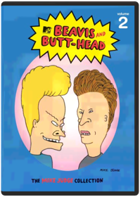 When Beavis and Butt-Head first appeared on MTV more than a decade ago, critics dismissed them as brainless couch potatoes who did nothing but watch TV and make lewd jokes about bodily functions. Today we know they were ahead of their time. Beavis and Butt-Head's unique idiocy profoundly changed television, movies, pop culture and the world. This historic box set, personally edited by creator Mike Judge, includes their finest episodes, specials, promos and guest appearances that so enriched a grateful and stupid nation. Creator, Mike Judge has chosen his next set of favorite episodes & music videos for this collector’s edition box set.Beavis and Butt-Head: The Mike Judge Collection Volume 3 Mike JudgeHeroes. Villains. Visionaries. Butt-munches. Beavis & Butt-Head have been called a lot of things. Smart isn’t usually one of them, but groundbreaking is. In this third installment of the earth-shattering Mike Judge Collection, the boys are back with more of their wisecracking, fart-knockingly-genius ways. Whether they make your stomach hurt from laughing, or because you have to, you know…one thing is for sure, Beavis & Butt-Head changed comedy and animation forever.Beavis and Butt-Head: Volume 4 Beavis & Butt-HeadBeavis and Butt-Head, America's favorite culture critics, are back. They now have more than just music videos to make fun of: Reality TV, the Internet, and Ultimate Fighting will all be crossing their TV screen! Brought back by creator Mike Judge, Beavis and Butt-Head are dumber than ever!Beavis and Butt-Head Do America Mike Judge, Brian Mulroney, Mike de Seve, Yvette KaplanOur intrepid adolescent heroes wake up to find their beloved television stolen, and embark on an epic journey across America to recover it, and, who knows, maybe even score. On the way they encounter a murderous smuggler of a deadly virus and his treacherous wife, an FBI agent with a predilection for cavity searches, a couple of rather familiar looking ex-Motley Crue roadies, Mr. Van Dreesen singing "Lesbian Seagull", a little old lady and of course Mr. Anderson and his trailer. Can the Great Cornholio save the day? Uh-huh. Huh-huh.Beavis and Butt-Head: Butt-O-Ween/Do Christmas Mike Judge10 Episodes in total featuring: BUTT-O-WEEN: 'Tis the season for terrorizing your neighbors. And these classic Beavis and Butt-Head episodes have tricks and treats so sweet you'll get a stomachache. The hapless mischief-makers dress up for Halloween, hang out with a psychopathic murderer, screw up lame pranks, and go door to door selling candy. So, smash that pumpkin and turn off the lights. Beavis and Butt-Head are about to make you scream — with laughter. BEAVIS AND BUTT-HEAD DO CHRISTMAS: 'Tis the season to be cool, as Beavis and Butt-Head star in their own twisted versions of two holiday classics. The ghosts of Christmas past, present, and future struggle to teach a scrooge-like Beavis the true meaning of Christmas, while Charlie the Angel comes down from heaven to show Butt-Head how much better life would be without him. Will Beavis and Butt-Head learn their lesson? Does a snowflake have a chance in hell?Beavis and Butt-Head: Do Christmas Yvette KaplanBeavis and Butt-Head are (gasp) separated on Christmas Eve and each experiences a variation on classic holiday tales. While Beavis experiences a (sadly temporary) change of heart after visits from the spirits of Christmas past, present, and future, Butt-Head is visited by Charlie the Angel, who shows him how much better life would be without him ... if only he would just jump from that bridge. Somewhere, Dickens and Capra are turning in their graves, but this is a show that a B&B diehard could definitely watch once a year. —Tom KeoghBeavis and Butt-Head: Hard Cash Beavis, Butt-HeadBeavis and Butt-head are hard-up for cash so they try their hand at several entrepreneurial ventures. Includes 8 episodes: Hard Sell, Temporary Insanity, Beaverly Butt-Billies, Green Thumbs, Whiplash, Inventors, Yard Sale, Baby Sitting.Beavis and Butt-Head: Innocence Lost/Chicks N' Stuff 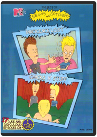 Beavis and Butt-Head: Law-Abiding Citizens/There Goes The Neighborhood 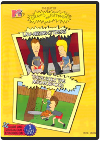 Beavis and Butt-Head: Troubled Youth/Feel Our Pain Beavis, Butt-headLike-New!! Part Of An Extensive Collection!! Mint Condition!!Beavis and Butt-Head: Work Sucks/The Final Judgement Beavis, Butt-Head15 Rude and Ridiculous EpisodesChappelle's Show: Season 1 Andre Allen, Bill Berner, Bobcat Goldthwait, Neal Brennan, Peter LauerThe 2003 debut of Chappelle's Show on Comedy Central marked a high point for the cable channel, and now the entire, wildly creative first season can be seen, with hundreds of bleeps removed. That's not to say Chappelle's Show is perfect entertainment: there are too many moments among the 12 episodes here that descend into pointless scatology and booty fever. But for the most part, Chappelle, a talented comic slowly growing into greatness, is trying to push the sketch-humor envelope and succeeds at surprising us with original concepts and merciless execution.Chappelle's Show: Season 2 Andre Allen, Neal Brennan, Rusty Cundieff, Scott Vincent, Todd BroderComedian Dave Chappelle hosts this sketch-comedy show that parodies many of the nuances of race and culture.All 14 uncensored and unblurred episodes Extra stand-up comedy from Dave Over 1 hour of bloopers and deleted scenes 2 unaired Charlie Murphy stories The Rick James extended interview Audio commentary by Dave Chappelle and series co-creator Neal BrennanChappelle's Show: The Lost Episodes Todd BroderOutrageous, intelligent and provocative, Chappelle's Show - The Lost Episodes proves that Dave Chappelle is now and forever one of the funniest, most boundary-pushing comedians to ever appear on television.Clerks: The Animated Series 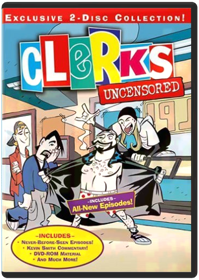 Steve Loter, Nicholas FilippiStudio: Buena Vista Home Video Release Date: 08/05/2003Crank Yankers: Season One Bill Berner, Bobcat Goldthwait, Hugh Martin, Kirk R. Thatcher, Ted MayCRANK YANKERS - SEASON 1 - UNCENSORED features outrageous crank calls from well-known comedians to real people and delivered to viewers through puppets called the "Crank Yankers" who live in the make-believe world called Yankerville. Special guest star voices include Dave Chappelle, Jack Black, Wanda Sykes, Tracy Morgan, Jimmy Kimmel and more.Crank Yankers: Season Two Volume One Tom SternGenre: Television, Comedies, Series, Comedy, Puppets, Television, Recommended, Reality-Based (Tv), Cable Tv/Cable Tv Shows, Comedians/Comediennes, Comedy Skits, Television Shows, Television/TV Series Description: Comic provocateurs Jimmy Kimmel and Adam Carolla (THE MAN SHOW) unleash another blast of politically-incorrect humor with their Comedy Central series CRANK YANKERS. Like a visual companion to The Jerky Boys, CRANK YANKERS finds Kimmel, Carolla, and several of their comedian friends—among them Sarah Silverman, Wanda Sykes, Tracy Morgan, and David Cross—making real prank phone calls to unsuspecting individuals and businesses while puppets act out the scenario on screen. With ample doses of outrageous improvisation and a cast of recurring characters that includes the lascivious Spoonie Luv, confused senior citizen Elmer Higgins, cantankerous war veteran Dick Birchum, and, of course, mentally challenged teen Special Ed, CRANK YANKERS parlays the bastions of bad taste into oddly compelling hilarity. This collection includes the first 15 episodes of season two. Release Notes: DVD Features: Region 1 Keep Case 2-Disc Set Full Frame - 1.33Crank Yankers: Season Two Volume Two Jimmy Kimmel, Adam CorollaCrank Yankers Season Two Volume Two - UNCENSORED - Don't miss all the hot puppet action in Volume Two of the Yankers Second Season. Featuring phone calls with Bobby Fletcher, OCD Ken, Elmer Higgins and your old friend Special Ed, plus salacious celebrity cranks from the likes of Jimmy Kimmel, Gilbert Gottfried, Robert Smigel, Kathy Griffin, Jeff Goldblum, and Dane Cook saying all the rude, offensive little things only an anonymous voice on the end of a phone can get away with! Bonus Materials: - 4 exclusive audio calls from Fred Armisen, Eminem Jim Florentine, and Jimmy Kimmel - 1 unaired call Deaf Frat GuyDark Angel: Season 1 David NutterDoctor Who: The Day of the Doctor VariousThe Doctors embark on their greatest adventure in this 50th Anniversary Special. In 2013, something terrible is awakening in London’s National Gallery; in 1562, a murderous plot is afoot in Elizabethan England; and somewhere in space, an ancient battle reaches its devastating conclusion. All of reality is at stake as the Doctor’s own dangerous past comes back to haunt him.Ash vs Evil Dead - The Complete First Season  Ash vs Evil Dead: Season 2 Ash vs Evil Dead: The Complete Third Season Ash is baaaack! Bruce Campbell reprises his "Evil Dead" film role as heroic, chainsaw-handed monster fighter Ash Williams, now an aging lothario who has successfully avoided responsibility, maturity and heinous villains for the past 30 years. Constantly peering over his shoulder, Ash somehow knew that the Evil Dead would return for him. That day arrives when Ash commits an act of carelessness, unleashing a Deadite plague that threatens to destroy mankind. Co-starring in the half-hour series are Lucy Lawless as mysterious Ruby; Ray Santiago as Ash's loyal sidekick, Pablo Simon Bolivar; and Dana DeLorenzo as moody wild child Kelly Maxwell.Family Guy: Volume 1: Seasons 1 & 2 Harold McKenzie, Karyn Finley ThompsonMeet the Griffins: Peter, the big, lovable oaf who always says what’s on his mind. Lois, the doting mother who can’t figure out why her baby son keeps trying to kill her. Their daughter Meg, the teen drama queen who’s constantly embarrassed by her family. Chris, the beefy 13-year-old who wouldn’t hurt a fly, unless it landed on his hot dog. Stewie, the maniacal one-year-old bent on world domination. And Brian, the sarcastic dog with a wit as dry as the martinis he drinks. The animated adventures of his outrageous family will have your whole family laughing out loud.Family Guy: Volume 2: Season 3 Harold McKenzie, Karyn Finley ThompsonFamily Guy Volume 2 sees the return of America's most outrageous animated family with all 21 Season Three episodes, plus one never-before-seen episode - "When You Wish Upon A Weinstein" banned from TV, and only available in this collection!
In this hilarious final volume, the Griffin family faces all-new dilemmas, including Brian's unintentional foray into directing porn, Stewie's rants on national TV, Meg's date with a nudist and Lois' Yuletide insanity.
Meanwhile, Peter is surprised to discover Lois was once a groupie, and his son, Chris, is more "endowed" than he is.Family Guy: Volume 3 Harold McKenzie, Karyn Finley ThompsonFans will have to wait no longer for the next Volume of Family Guy on DVD! The hilarious first part of Emmy nominated Season 4 will have you laughing like you've never laughed before. Edgier and more irreverant than ever, you'll forget you've ever heard the term "Politically Correct!" The must-have DVD of the season — any self-respecting guy will own Family Guy Volume 3 on November 29th.Family Guy: Volume 4 Harold McKenzie, Karyn Finley ThompsonFasten your sofa belts for another fiendishly futile attempt at world domination for Stewie-and a diaper full of fun for "Family Guy" fans around the globe! Boasting laughs as big as Peter's waistline, these 14 hilarious episodes from Season Four find television's most outrageous animated family in all sorts of comically compromising situations. Don't miss out on this Fox TV DVD best seller—a 3 disc set available for $39.98 & $54.98.Family Guy: Laugh It Up Fuzzball Disc 1: Blue Harvest Blu-ray
Disc 2: Something Something Something Dark Side Blu-ray
Disc 3: It's A Trap! Blu-rayFamily Guy: Stewie Griffin: The Untold Story 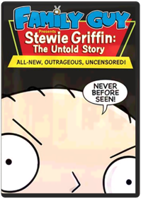 Pete Michels, Peter ShinIn this exclusive 88 minute DVD premiere, featuring brand new, never before seen content, Stewie, the maniacal baby genius, is distracted from his plans for world domination when he sees a man who looks just like him on television. Convinced that this man must be his real father (after all, how could he possibly share genetic material with the dimwitted Peter?), Stewie sets off on a cross-country road trip to find him. But his incredible journey leads him to discoveries far more vile and shocking that anything found in his diaper.Fargo Mcdormand, Macy, Buscemi, StormareThe "middle of nowhere" has never looked better in this new edition, now remastered for the best high-definition picture yet! In this film Nominated for seven OSCARSr, * things go terribly awry when small-time Minnesota car salesman Jerry Lundegaard (William H. Macy) hires two thugs (Steve Buscemi and Peter Stormare) to kidnap his wife so he can collect the ransom from his wealthy father-in-law. Once people start dying, the very chipper and very pregnant Police Chief Marge (Frances McDormand) takes the case. Will she stop at nothing until she gets her man? You betcha.Futurama: Volume 3 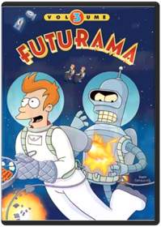 Studio: Tcfhe Release Date: 08/22/2006 Run time: 552 minutes Rating: NrFuturama: Volume 4 Volume 4 includes the following episodes —
Season Four: Love and Rocket, Leela’s Homeworld, Where No Fan Has Gone Before
Season Five: Crimes of the Hot, Jurassic Bark, A Taste of Freedom, Kif Gets Knocked up a Knotch, Less than Hero, Teenage Mutant Leela’s Hurdles, The Why of Fry, The Sting, The Farnsworth Parabox, Three Hundred Big Boys, Spanish Fry, Bend Her, Obsoletely Fabulous, Bender Should Not Be Allowed on TV, The Devil’s Hands are Idle Play Things
Included Easter Eggs –
Star Trek panel (consists of three clips)
Table Read Audio (played over a static card)
Tied Together as a Single Asset (writer Goodman on guest voice actors; writer Goodman on script changes; actor Di Maggio on Bender)Futurama: Bender's Big Score Dwayne Carey-HillThis DVD includes the all-new feature-length epic. Extras include complete commentary by Matt Groening, David X. Cohen, and cast member; all new, full-length episode of Everyone Loves Hypnotoad, including TV commercials of the future; mind bending FuturamFuturama: The Beast with a Billion Backs 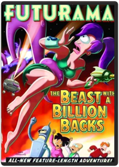 Peter AvanzinoThe thrilling conclusion to Futurama: Benders Big Score.
Bender and the planet express crew must contend with a massive cosmic team that sends the world into panic.Futurama: Bender's Game Dwayne Carey-HillWith fuel prices skyrocketing, the Planet Express crew sets off on a dangerous mission: to infiltrate the world's only dark-matter mine, source of all spaceship fuel. But deep beneath the surface lies a far stranger place... a medieval land of dragons and sorcery and intoxicated knights who look suspiciously like Bender. So park your hover-car and saddle up your unicorn for Futurama's grandest adventure yet: BENDER'S GAME!Futurama: Into the Wild Green Yonder 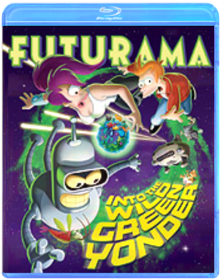 Peter AvanzinoGenre: Comedy
Rating: NR
Release Date: 24-FEB-2009
Media Type: Blu-RayFuturama: Volume 5 Matt GroeningYou asked for more...and the Planet Express crew delivered! Welcome back to FUTURAMA, the light-years-ahead-of-its-time animated series from The Simpsons creator Matt Groening. Join Fry, Bender, Leela and the rest of the gang for 13 hilarious new episodes that tackle some of the most controversial subjects in the galaxy...including evolution, mind exchange, feline intelligence and robosexual marriage. Hey, it could happen!Futurama: Volume 6 Matt GroeningBlast off your inhibitions as The Simpsons creator Matt Groening brings you another far-out collection of FUTURAMA™ fun! In addition to a full payload of outrageous extras not shown on TV, Volume Six delivers 13 mind-Bendering new episodes that involve time travel, self-replication, covert missions, alien eggs, and more robot roughhousing than you can shake a girder at. It’s a scream...the good kind!Futurama: Volume 7 Matt GroeningCrank up the gravity and put your head safely in a jar! It's Volume Seven of FUTURAMA - the animated sci-fi comedy from The Simpsons creator Matt Groening. Crammed with a whole new dimension of extras not shown on TV, this cosmic collection includes 13 bizarre and brilliant episodes involving ancient prophecies, Presidents' heads, robot gangsters, angry butterflies, and of course, sausage-making. It's a shipload of futuristic fun!Get a Life: Volume 1 David MirkinWhenever a new network gets a start, some weird things make it onto the air. That's the only possible explanation for Get a Life, Chris Elliott's short-lived series in which he starred as a thirtysomething paperboy, Chris Peterson, who still lived at home with his folks. (His dad, strangely enough, was played by Chris's real-life father, Bob Elliott, a respected comedian in his own right.)
The two episodes on Volume 1 exemplify what Get a Life was all about: a straight-faced spoof of sitcom conventions that managed to avoid all of the conventions that spoofs usually observe. That it wasn't laugh-out-loud funny is beside the point; Elliott's fans know that his brand of humor is often diametrically opposed to conventional humor.
Though the plots are fairly conventional—in "The Prettiest Week of My Life," Peterson enrolls in the Handsome Boy Modeling School, where he competes with another student, Sapphire; "Bored Straight" finds Peterson trying to rehabilitate a gang of teens—the shows themselves are anything but. —Randy SilverHe-Man & She-Ra: A Christmas Special 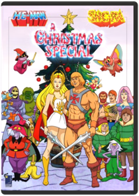 Bill Reed, Ernie SchmidtThe holiday season comes to the magical worlds of Eternia and Etheria in He-Man and She-Ra A Christmas Special! When Orko accidentally winds up on Earth during the Christmas winter he befriends two children who share stories of the goodwill and merriment that the holidays embrace. When they finally return to Eternia the holiday spirit is spread amongst the entire Royal Palace but this overflowing goodwill attracts the unwelcome attention of Horde Prime and Skeletor. Will the combined power of He-Man She-Ra and the spirit of Christmas be enough to stop them?System Requirements:Running Time: 45 minutesFormat: DVD MOVIE Genre: CHILDREN/FAMILY UPC: 787364630790He-Man and the Masters of the Universe: Season 1 Volume 1 Excitement and adventure a wait those who enter the magical land of Eternia! Join He-Man and the Masters of the Universe as they battle against Skeletor and his crew of dastardly villains in the greatest adventures ever told!These first 33 episodes are only the beginning of the most phenomenal stories ever created in animation! Relive the excitement as you enjoy the adventures of the universe s greatest warriors. The power has returned!System Requirements: Running Time 710 MinFormat: DVD MOVIE Genre: CHILDREN/FAMILY Rating: NR UPC: 787364649495He-Man and the Masters of the Universe: Season 1 Volume 2 The battle for power continues on the world of Eternia! Join He-Man and the Masters of the Universe® as they battle against Skeletor and his crew of detestable villains in the greatest adventures ever told!These 32 episodes continue the saga of the most phenomenal stories ever created in animation! Relive the excitement as you enjoy the adventures of the universe s greatest warriors. The power has returned!System Requirements:Running Time 688 Mins.Format: DVD MOVIE Genre: CHILDREN/FAMILY Rating: NR UPC: 787364651894He-Man and the Masters of the Universe: Season 2 Volume 1  How the Grinch Stole Christmas 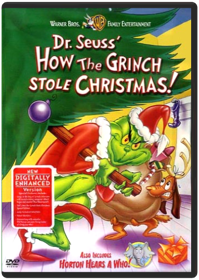 Accept no substitutes. The 1966 television adaptation of Dr. Seuss' timeless book How the Grinch Stole Christmas!—about an anti-Santa who tries to heist the holiday only to learn a powerful lesson—is a classic in its own right, and looking better than ever in its 50th Birthday Deluxe Edition. (For those doing the math, the 50 years is counting from the book's 1957 publishing date rather than the show's broadcast date.) The most significant improvement is in the digital transfer, cleaning up fuzz and specks and restoring the proper colors to the program. While the awful earlier DVDs showed the Grinch in a mustard-yellow color, this edition restores his proper green gleam. Special features are mostly ported over from the previous DVD—the Horton Hears a Who program, a featurette on the songs, Phil Hartman's special edition version, pencil tests, etc. minus the commentary track—but there is a new 15-minute featurette, "Dr. Seuss and the Grinch: From Whoville to Hollywood." While it starts out as a fluff piece aimed at the younger set (interviews with kids, some rapping), it does provide some interesting information, including interviews with the widows of Theodore Geisel and Chuck Jones and clips of Geisel and Jones' Private Snafu. (No mention of Jim Carrey, however.) —David HoriuchiIn Living Color: Season 1 Keenen Ivory Wayans, Matt Wickline, Paul MillerTwo snaps up for In living Color on DVD! This is the first season of the comedy that crossed every line with their raunchy, crude humor and introduced a new generation of talent including Jim Carrey, The Wayans and many more. See classic sketches Men on Film and Homey the Clown on this 3-disc set that is loaded with behind the scenes extras.In Living Color: Season 2 Keenen Ivory Wayans, Matt Wickline, Paul MillerJim Carrey, David Alan Grier, Keenen Ivory Wayans. It's hard to count how many stars got their start on In Living Color , but this second season collection boasts quite a few-Jennifer Lopez, Jim Carrey, Damon Wayans and many more. 26 episodes on 4 DVDs. 1991-92/color/5 hrs/NR/fullscreen.In Living Color: Season 3 Keenen Ivory Wayans, Adam Small, Fax Bahr, Morris Abraham, Paul MillerIt’s triple the fun with Season Three of TV’s most outrageous sketch show, In Living Color. With its off-the-wall humor and in-your-face look at celebrities and pop culture, Keenen Ivory Wayan’s creation has a comic boldness all its own. The new season introduces Jamie Foxx to an already outstanding cast. The Fly Girls return with a sexy newcomer named Jennifer Lopez. And the edgy writing is back with a vengeance. This 3-disc Collector’s Edition features all 30 hilarious Season Three episodes—and it’s gonna rock your world!In Living Color: Season 4 Keenen Ivory Wayans, Adam Small, Fax Bahr, Morris Abraham, Paul MillerNonstop laughs are in the house with Season Four of In Living Color on DVD! No celebrity was too sacred and no current event was too controversial for this Emmy-winning hit show that pushed the boundaries of sketch comedy—with hilarious results. So join the talented Wayans family (including new cast member Marlon Wayans), along with Jim Carrey, Tommy Davidson, David Alan Grier, Jamie Foxx and the super-sexy fly girls for a howling good time with this 3-disc Collector's Edition, featuring all 33 hilarious Season Four episodes!King of the Hill: Season 1 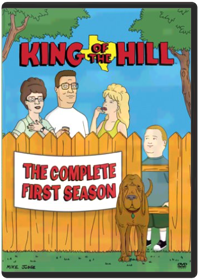 All 13 episodes from the debut season—including the pilot, "Luanne's Saga," "Westie Side Story," "Shins of the Father" and "Plastic White Female"—are featured in a three-disc set. 5 hrs. total. Standard; Soundtracks: English Dolby Digital Surround, French Dolby Digital Surround, Spanish Dolby Digital Surround; Subtitles: Spanish; audio commentary; deleted scenes; featurettes; music video; TV spots; more. **13 episodes on 3 discs. 5 hrs.**King of the Hill: Season 2 Adam Kuhlman, Chris Moeller, Cyndi Tang-Loveland, Gary McCarver, Jack DyerKing of the Hill: Season 3 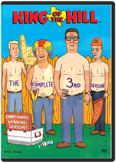 Adam Kuhlman, Chris Moeller, Cyndi Tang-Loveland, Dominic Polcino, Gary McCarverKing of the Hill: Season 4 Adam Kuhlman, Allan Jacobsen, Anthony Lioi, Boo Hwan Lim, Chris MoellerAll 24 episodes from season four—including "Peggy Hill: The Decline and Fall," "A Beer Can Named Desire," "To Kill a Ladybird," "Naked Ambition," and "Peggy's Fain Fair"—are featured in a three-disc set. 9 1/2 hrs. total. Standard; Soundtracks: English Dolby Digital Surround, Spanish Dolby Digital Surround; Subtitles: English, Spanish. **24 episodes on 3 discs. 9 1/2 hrs.**King of the Hill: Season 5 Adam Kuhlman, Allan Jacobsen, Anthony Lioi, Boo Hwan Lim, Cyndi Tang-LovelandKING OF THE HILL SEASON 5 - DVD MovieKing of the Hill: Season 6 Mike JudgeThe Hill family is back, and Arlen, Texas has never been wilder or funnier! From love triangles to gay rodeos, through beer shortages and Vietnam flashbacks, and from Mexico to Japan by way of the Renaissance Faire, this is King of the Hill’s craziest season yet! Did we mention Jimmy Carter?It’s all here...and more. Life in Arlen will never be the same!Lost: The Complete First Season From J.J. Abrams, the creator of Alias, comes the action-packed adventure that became a worldwide television event. Stranded on an island that holds many secrets, 48 people must band together if they hope to get home alive. Now you can experience the nonstop excitement and mystery of every episode, from the show's stunning first minute to its spectacular finale, on a seven-disc set. Presented in a widescreen theatrical format with 5.1 Surround Sound and bursting with more than eight hours of original bonus features — including unaired Lost flashbacks from the final episode — Lost is a real find.Lost: The Complete Second Season 4, 8, 15, 16, 23, 42. Push the button and prepare to be blown away by the groundbreaking television event USA Today calls "TV's best series." The multiple Emmy® Award-winning drama reaches new heights in its spectacular second season as the survivors of Oceanic Flight 815 discover they are not alone in their battle against "the Others," and a contested decision to open the hatch reveals a new realm of mystery and intrigue. Prepare yourself for the DVD experience of Season Two, complete with over 8 hours of original bonus material you can't see anywhere else — including unaired original flashbacks — and you'll discover for yourself why "everything happens for a reason."Lost: Season 3 No Description Available.
Genre: Television
Rating: TV14
Release Date: 11-DEC-2007
Media Type: Blu-RayLost: Season 4 After Oceanic Air flight 815 tore apart in mid-air and crashed on a Pacific island, it s survivors were forced to find inner strength they never knew they had in order to survive. But they discovered that the island hold many secrets, including a mysterious smoke monster, polar bears, a strange French woman and another group of island residents known as The Others. The survivors have also found signs of those who came to the island before them, including a 19th century sailing ship called The Black Rock, the remains of an ancient statue, as well as bunkers belonging to the Dharma Initiative a group of scientific researchers who inhabited the island in the recent past.Agent Carter: Season 1  Agents of S.H.I.E.L.D.: The Complete First Season 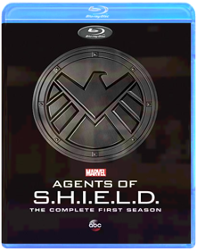 The mind-blowing saga that began in MARVEL'S THE AVENGERS continues in ABC's action-packed series, MARVEL'S AGENTS OF S.H.I.E.L.D.: THE COMPLETE FIRST SEASON. In the wake of The Battle of New York, the world has changed forever. An extraordinary landscape of wonders has been revealed! In response, mysteriously resurrected Agent Phil Coulson assembles an elite team of skilled agents and operatives: Melinda May, Grant Ward, Leo Fitz, Jemma Simmons and new recruit/computer hacker Skye. Together, they investigate the new, the strange, and the unknown across the globe, protecting the ordinary from the extraordinary. But every answer unearths even more tantalizing questions that reverberate across the entire Marvel Cinematic Universe: Who is "The Clairvoyant"? What is Hydra's sinister master plan; what dark secret lies behind Skye's puzzling origins; and most importantly of all, who can be trusted? Start your collection and relive all 22 thrilling episodes as you unravel mysteries, discover cool gadgets and meet iconic Marvel characters. Then, achieve Level 7 clearance and delve deeper as you explore newly declassified bonus features with this must-own set!Agents Of S.H.I.E.L.D. The Complete Second Season The second season of the action drama spin-off from 'Marvel Avengers Assemble' (2012). Clark Gregg reprises his role from the film as Agent Phil Coulsen, who runs an elite team for the Strategic Homeland Intervention, Enforcement and Logistics Division. Together these agents of S.H.I.E.L.D. must investigate and hunt down strange occurences posed by new threats and a rising number of supervillains. The episodes are: 'Shadows', 'Heavy Is the Head', 'Making Friends and Influencing People', 'Face My Enemy', 'A Hen in the Wolf House', 'The Writing On the Wall', 'The Things We Bury', '...Ye Who Enter Here', 'What They Become', 'Aftershocks', 'Who You Really Are', 'One of Us', 'Love in the Time of Hydra', 'One Door Closes', 'Afterlife', 'Melinda', 'The Frenemy of My Enemy', 'The Dirty Half Dozen', 'Scars' and 'S.O.S.'.Agents of S.H.I.E.L.D. The Complete Third Season Gear up for explosive action and mind-blowing adventure when Hydra's ancient origins and ultimate agenda are revealed in the epic, game-changing third season of Marvel's Agents of S.H.I.E.L.D. The survival of mankind hangs in the balance as Director Phil Coulson and his Agents battle an otherworldly evil. Devastated by the apparent loss of Jemma Simmons, Leo Fitz risks everything to rescue her. Agent May rejoins the team-only to discover a terrible truth about her ex-husband, Dr. Andrew Garner. Meanwhile, after the release of Terrigen, the U.S. government creates the ATCU (Advanced Threat Containment Unit) to monitor emerging Inhumans. But the program is actually a smoke screen for the sinister machinations of Hydra's leader Gideon Malick, who joins forces with treacherous ex-S.H.I.E.L.D. agent Grant Ward. The resulting carnage spurs Coulson to exact a revenge that will ultimately backfire, unleashing apocalyptic consequences in the form of a terrifying alien entity known as Hive. To help combat this threat, Agent Daisy Johnson organizes a small band of Inhuman "Secret Warriors," not knowing that she will soon meet her match and once again be forced to make a heartbreaking sacrifice. Experience all 22 thrilling episodes - plus captivating bonus features - with this must-own boxed set: Marvel's Agents of S.H.I.E.L.D. - The Complete Third Season.Mr. Robot: Season 1 Enter the "completely captivating" (Jimmy Ryan, Spoiler TV) world of Mr. Robot. Cyber-security engineer by day and vigilante hacker by night, Elliot (Rami Malek, The Pacific) finds himself at a crossroads when the mysterious leader (Christian Slater, Very Bad Things) of an underground hacker group recruits him to destroy the firm he is paid to protect. Compelled by his personal beliefs, Elliot struggles to resist the chance to take down the multinational CEOs he believes are running (and ruining) the world. Now, watch all 10 Season One episodes back-to-back and uninterrupted of the psychological thriller that critics rave is "damn near perfect" (Jessica Rawden, Cinemablend).Mr. Robot: Season 2 Winner of the Golden Globe for Best TV Drama, Mr. Robot follows Elliot Alderson (Golden Globe-nominee and Primetime Emmy Award-winner Rami Malek), a young cyber-security engineer who becomes involved in the underground hacker group fsociety, after being recruited by their mysterious leader (Golden Globe-winner Christian Slater). Following the events of fsociety's 5/9 hack on multi-national company Evil Corp, the second season explores the consequences of that attack as well as the illusion of control.Ninja Scroll: Volume 1: Dragon Stone Artist Not ProvidedNinja Scroll: Volume 2: Dangerous Path Artist Not ProvidedEpisode 5 "Diamond Child" Meet Tatsunosuke, a young thief with a special gift and nothing to lose. Matched against Tsubute, which thief will come out with the Dragon Stone in his pocket? Faced with the opportunity to join the Kimon, will Tatsunosuke take the chance, and pay for it with his life? Episode 6 "Shelter From the Rain" Apart from the others, Jubei finds himself poisoned in battle with Nenmu, a ninja who can use the bodies of people. Caught in a rainstorm, with the help of a woman and her young son, Jubei slowly recuperates from the poison. But with Nenmu’s ability to manipulate anybody, who can tell a friend from the enemy? Will Jubei’s newfound allies turn against him? Episode 7 "Blossom" Azami is back, and after the half of Dragon Stone she could not get the first time, determined not to lose it to the Kimon clan. Meanwhile, Jubei learns the truth about the Dragon Stone and the treasure of the Lost Dynasty, and he’s slowly figuring out just how precarious of a position they are all in. Episode 8 "The Fate of Rengoku" Rengoku has her mission – to get the other half of the Dragon Stone from Jubei. This is also her chance to avenge the death of her beloved brother, but at what cost? With revenge on her mind, what will Rengoku sacrifice for the ability to kill Jubei?Ninja Scroll: Volume 3: Deliverance Artist Not ProvidedThe war between the clans reaches its climax as Shigure is kidnapped by the Kimon clan, leaving both the Hiruko and Jubei desperately chasing after them. As the powers of the Light Maiden grow stronger, friends and enemies become harder to tell apart andThe Original Christmas Classics Gift Set Jules Bass, Arthur Rankin Jr.Four original holiday favorites make the perfect stocking stuffer for the young and the young at heart. Includes Rudolph the Red-Nosed Reindeer (Burl Ives. 1964/65 min.), Santa Claus is Comin' to Town (Fred Astaire, Mickey Rooney. 1970/55 min.), Frosty the Snowman (Jimmy Durante. 1969/30 min.) and Frosty Returns (Jonathan Winters. 1992/25 min.). Animated. 2 Discs. Color/NR.Pee-wee's Playhouse #1 Paul Reubens, Bill Freiberger, Guy J. Louthan, Stephen R. Johnson, Wayne OrrPaul Reubens, Laurence Fishburne, Phil Hartman. The madcap adventures of Pee Wee's Playhouse charmed a generation of kids with its incredibly inventive and hilarious characters, including Miss Yvonne, Cowboy Curtis, Reba the Mail Lady, Captain Carl, the King of Cartoons and so many more. Includes all 23 episodes from the first two seasons on 5 DVDs. 1986-87/color/9 hrs/NR/fullscreen.Pee-wee's Playhouse #2 Bill FreibergerNow you can see Miss Yvonne, Cowboy Curtis, Jambi the Genie, Reba the Mail Lady, Captain Carl, Tito, the King of Cartoons and the rest of the gang for the first time ever on DVD! Join the fun and scream the secret word to every great episode! It's side-splitting hilarity in never-before-seen clarity! Hey, that rhymes! Get 'em while they're hot if you wanna be cool! Winner of an amazing 22 Emmy« Awards! During its six-year run, this show has enchanted millions of children and adults alike! Starring Paul Reubens, Larry Fishburne, S. Epatha Merkerson, Lynne Stewart. VOL. 2 EPISODES: Pajama Party, I Remember Curtis, Reba Eats and Pterri Runs, Conky's Breakdown, To Tell the Tooth, Mystery, Dr. Pee-wee and the Del Rubios, Front Page Pee-wee, Fire in the Playhouse, Tango Time, Love That Story, Playhouse Day, Sick, Did Someone Say Sick?, Accidental Playhouse, Miss Yvonne's Visit, Fun, Fun, Fun, Rebarella, Camping Out, Heat Wave, Something to Do, Chairry Tee Drive, Playhouse for Sale, Let's Play Office Includes 6 Never-Before-Seen Lost Episodes!Pee Wee's Playhouse Christmas Special Wayne OrrJoin the whole Playhouse gang for one of the wackiest Christmas specials ever with laughs for the whole family and all the imagination and charm of Saturday morning's most outrageous TV series, which became a cultural milestone when it aired from 1986 to 1991. In this unique triple Emmy« nominated Christmas special, Pee-wee gets into the spirit of the season with lots of singing, dancing and other holiday fun with his Playhouse pals and more than a dozen celebrity guest stars as you've never seen them before. Everything's going great, except Pee-wee's Christmas wish list is so long that there won't be enough presents for all the other kids in the world if he gets everything he wants! When Santa Claus pleads for help, Pee-wee reluctantly gets a lesson in the true meaning of Christmas. Cast includes: Cowboy Curtis (Laurence Fishburne), Reba the Mail Lady (S. Epatha Merkerson), and Miss Yvonne (Lynne Stewart). Guest stars include: Frankie Avalon, Whoopi Goldberg, Joan Rivers, Charo, Del Rubio Triplets, Annette Funicello, Magic Johnson, Dinah Shore, Grace Jones, Oprah Winfrey, k.d. lang, Little Richard, Zsa Zsa Gabor.Planet of the Apes: The Complete TV Series After their spacecraft travels through a time warp, two astronauts (Ron Harper, James Naughton) from 1981 crash-land back on Earth in the year 3085 - a time when intelligent apes rule and humans have been reduced to servants or pets. Captured by the apes and sentenced to death, they are saved by a curious chimpanzee name Galen (Roddy McDowall). But now all three are on the run, trying to keep one step ahead of the gorilla army led by General Urko (Mark Lenard), who is determined to kill the renegades.Quantum Leap: Complete Series - Blu-ray VariousFIRST TIME AVAILABLE IN HIGH-DEFINITON!
Sam Beckett has a date with destiny. Where will he end up next?
Get ready for an adventure of many lifetimes with the ground-breaking sci-fi classic, Quantum Leap. With the complete series box set, you can now leap through all 95 thrilling episodes over 5 seasons of this Primetime Emmy® Award-winning series back-to-back and uninterrupted!
Join Dr. Sam Beckett (Scott Bakula), a time traveler lost in time, who temporarily leaps into the bodies and lives of other people to put right what once went wrong. Accompanied by Al (Dean Stockwell), a wise-cracking holograph that only Sam can see and hear, Sam twists the hands of fate with each heart-pounding, action-packed adventure in the hopes that he can someday complete the mission that will take him home.
Notable Cast/Crew: Includes hundreds of celebrity guest stars including: Jennifer Anniston, Neil Patrick Harris, Teri Hatcher, Joseph Gordon-Levitt, Michael Madsen, Jason Priestley, Bob Saget, Brooke Shields, and Dr. Ruth Westmeimer.The Ren & Stimpy Show: The First and Second Seasons John Kricfalusi, Bob Camp, Bong Hee Han, Chris Reccardi, Gregg VanzoJoin Ren and Stimpy in their bizarre and gross world that features the oddly lovable duo in some outlandish situations coupled with hilarious jokes. Ren and Stimpy features the guest voice of music star Frank Zappa and consist of amusing episodes combined with the gross-out humor that became popular when the show first premiered on Nickelodeon in 1991.The Ren & Stimpy Show: Seasons Three and a Half-ish Bob Camp, Bill Wray, Chris Reccardi, Howard E. Baker, Jim GomezDid you REALLY think you were safe from the insanity and stupidity of Ren and Stimpy? Well, the demented duo is back for more madness with their friends Powdered Toastman, Jimmy Lummox, Jerry the Bellybutton Elf, crazy Wilbur Cobb, deranged circus midgets, and more! From girl scouts to brain surgery, from prehistoric times to Washington, D.C., from inside Stimpy Bellybutton, to inside Ren's face, get ready for a whacked-out ride! Oh, joy of joys!The Ren & Stimpy Show: Season Five and Some More of Four Bob Camp, Arthur Filloy, Bill Wray, Chris Reccardi, Craig BartlettJoin Ren and Stimpy in their bizarre and gross world that features the oddly lovable duo in some outlandish situations coupled with hilarious jokes. THE REN AND STIMPY SHOW: SEASONS FIVE & SOME MORE OF FOUR consists of amusing episodes combined with the gross-out humor that became popular when the show first premiered on Nickelodeon in 1991Ren & Stimpy: The Lost Episodes Vincent WallerAfter a ten year hiatus, John K. resurrected his classic cartoon for Spike TV – no holds barred. Witness the cartoons he always wanted to make, uncensored and out of control. Deemed too hot to handle by Spike execs, these episodes are now available on DVD – be warned: this is not your baby-brother’s Ren & Stimpy!Robot Chicken: Season 1 Seth Green, Douglas Goldstein, Matthew Senreich, Tom RootOld-school stop-motion animation and fast-paced satire are the hallmarks of this eclectic show created by Seth Green and Matt Senreich. Action figures find new life as players in frenetic sketch-comedy vignettes that skewer TV, movies, music and celebrity. It's television especially formulated for the Attention Deficit Disorder generation.
DVD Features:
Audio Commentary
Audio Commentary:On all episodes by creators Seth Green and Matt Senreich.
Comparison Scenes:FX/Wire to Animation Comparisons & Animatic to Episode Comparisons
Deleted Scenes:Includes deleted animatics and scenes from 4 episodes.
Featurette:Behind the scenes of Robot Chicken with the cast and crew.
Gag Reel:Pee Gag Reel.
Other:See the Animation Meetings for three episodes.
Outtakes:Includes alternate audio takes from cast and guest stars.
Photo galleryRobot Chicken: Star Wars Seth GreenA long time ago, in a galaxy far, far away...no one was laughing at "Star Wars." Now, "Robot Chicken" mastermind Seth Green directs this affectionate animated spoof of the six-chapter space opera, in which Luke Skywalker (voiced by Mark Hamill) loses track of his own backstory, Darth Vader laments the Death Star's destruction by the "Aluminum Falcon," and more. Also stars the voices of Ahmed Best, Donald Faison, and George Lucas. 23 min. Standard; Soundtrack: English Dolby Digital stereo; Subtitles: English, French, Spanish; featurettes; audio commentary; deleted scenes; photo gallery; behind-the-scenes footage; more.Seinfeld: Seasons 1 & 2 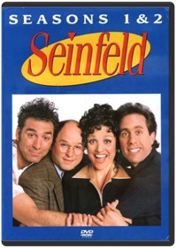 Tom CheronesSeinfeld has never looked this good! All 18 episodes from the first two seasons have been remastered in high definition for the best possible picture and sound quality. Including 2 versions of the pilot episode and approximately 13 hours of exclusive special features from the creative talents behind the show, this DVD is a must own!Seinfeld: Season 3 Jason Alexander, David Steinberg, Joshua White, Tom CheronesRelive your favorite Seinfeld moments like never before in this 4-disc set with all 22 episodes from the third season remastered in high definition for the best possible picture and sound quality! With approximately 13 hours of exclusive special features from the creative talents behind the show, this DVD is a must own!Seinfeld: Season 4 Tom CheronesRelive your favorite Seinfeld moments like never before in this 4-disc set with all 24 episodes from the fourth season remastered in high definition for the best possible picture and sound quality! With approximately 13 hours of exclusive special features from the creative talents behind the show, this DVD is a must own!
The episodes included in Season 4 are:
41. The Trip (1)
42. The Trip (2)
43. The Pitch
44. The Ticket
45. The Wallet (1)
46. The Watch (2)
47. The Bubble Boy
48. The Cheever Letters
49. The Opera
50. The Virgin
51. The Contest
52. The Airport
53. The Pick
54. The Movie
55. The Visa
56. The Shoes
57. The Outing
58. The Old Man
59. The Implant
60. The Junior Mint
61. The Smelly Car
62. The Handicap Spot
63. The Pilot (1)
64. The Pilot (2)Seinfeld: Season 5 Tom Cherones1. The Mango
What kind of fruit does Kramer attempt to return to Joe's Fruit Stand?
a) Plum
b) Mango
c) Peach
d) Kiwi
2. The Puffy Shirt
What does George's father wear in the pool?
a) Swim cap
b) Sneakers
c) Flip Flops
d) T-shirt
3. The Sniffing Accountant
Which grammatical element causes Elaine to break up with Jake Jarmel?
a) Split infinitive
b) Capitalization
c) Exclamation point
d) Question mark
4. The Bris
Who does Jerry enjoy mimicking in The Bris?
a) Marlon Brando from The Godfather
b) Al Pacino from Scent of a Woman
c) Robert De Niro from Taxi Driver
d) Sylvester Stallone from Rocky
5. The Barber
What movie calms Jerry's barber Enzo during his fit of rage?
a) Edward Scissorhands
b) Shampoo
c) The Barber of Seville
d) Hairspray
Answers:
1. Peach
2. Sneakers
3. Exclamation point
4. Marlon Brand from The Godfather
5. Edward Scissorhands
Ready to buy? Sign in to turn on 1-Click ordering. a9.com Instant Reward Active. You Save 1.57% Tell a Friend Seinfeld - Season 5 (1990) Starring: Jerry Seinfeld, Julia Louis-Dreyfus Director: Andy Ackerman, Jason Alexander Rating: Seinfeld - Season 5 See larger image List Price: $49.95 Price: $32.47 and this item ships for FREE with Super Saver Shipping. See details You Save: $17.48 (35%) Availability: This title will be released on November 22, 2005. You may order it now and we will ship it to you when it arrives. Ships from and sold by Amazon.com. See more on holiday shipping. Edition: View highlights from Seinfeld: Seasons 5 & 6 and vote for your favorite scenes here. Other Versions (DVD) List Price Price Other Offers: DVD Seinfeld - Seasons 1 & 2 $49.95 $29.97 117 used & new from $19.99 DVD Seinfeld - Season 3 $49.95 $29.97 116 used & new from $21.00 DVD Seinfeld - Season 6 $49.95 $32.47 DVD Seinfeld - Season 4 $49.95 $29.97 97 used & new from $26.50 DVD Seinfeld - Seasons 5 & 6 Giftset (Includes Handwritten Script and Collectible Puffy Shirt) $119.95 $77.97 Better Together Buy this DVD with Seinfeld - Season 6 DVD ~ Jerry Seinfeld today! Total List Price: $99.90 Buy Together Today: $64.94 Customers who bought this DVD also bought * Seinfeld - Season 6 DVD ~ Jerry Seinfeld * Seinfeld - Season 4 DVD ~ Jerry Seinfeld * Seinfeld - Season 3 DVD ~ Jerry Seinfeld * Seinfeld - Seasons 1 & 2 DVD ~ Jerry Seinfeld * Friends - The Complete Tenth Season DVD ~ Lisa Kudrow * Star Wars, Episode III - Revenge of the Sith (Widescreen Edition) DVD ~ George Lucas Explore Similar Items: in DVD, in Books, and in Music Storyline Genres: Comedy Plot Outline: The continuing misadventures of neurotic New York stand-up comedian Jerry Seinfeld and his equally neurotic New York friends. Plot Synopsis: Jerry Seinfeld stars in this television comedy series as himself, a comedian. The premise of this sitcom is Jerry and his friends going through everyday life, discussing various quirky situations that we can all relate to (especially if we live in New York). The eccentric personalities of the offbeat characters who make up Jerry's social circle contribute to the fun. Plot Keywords: Title Spoken By Character | Stand Up Comedy | Eccentric | Ensemble Cast | Friend | Product Placement | New York Yankees | New York | Single | Sitcom | Apartment | Baseball | (Show all 21 plot keywords recommended by customers) Product Details * Actors: Jerry Seinfeld, Julia Louis-Dreyfus, Michael Richards, Jason Alexander, See more * Directors: Andy Ackerman, Jason Alexander * Format: Color, Box set, Dolby * Aspect Ratio: 1.33:1 * Number of discs: 4 * Rated: * Studio: Columbia Tristar Home Video * DVD Release Date: November 22, 2005 * Run Time: 498 minutes * Average Customer Review: Based on 15 Reviews * DVD Features: o Available Subtitles: English, Spanish, French, Portuguese o Available Audio Tracks: English (Dolby Digital 2.0 Stereo), French (Dolby Digital 2.0 Mono) o Featurette: Jason + Larry = George o Deleted Scenes: In the Vault o Inside Looks o Commentaries: Yada, Yada, Yada o Notes About Nothing o NBC Promos and TV Spots: Sponsored by Vandelay Industries o Exclusive Stand-Up Material: Master of His Domain o Bloopers: Not That There's Anything Wrong With That * Note on DVD sets: During shipping, discs in multidisc sets occasionally become dislodged without damage. Please examine and play these discs. If you are not completely satisfied, we'll refund or replace your purchase. * From IMDb: Quotes & Trivia * ASIN: B000BBOUEU * Amazon.com Sales Rank: #12 in DVD This is item 4 in The Seinfeld Series. Theatrical Release Information US Theatrical Release Date: May 31, 1990 MPAA: Production Company: Castle Rock Entertainment, West-Shapiro Filming Locations: Los Angeles, California, USA| New York City, New York, USA| Ren-Mar Studios - 846 N. Cahuenga Blvd., Hollywood, Los Angeles, California, USA Editorial Reviews Seinfeld: Season 5 Trivia 1. The Mango What kind of fruit does Kramer attempt to return to Joe's Fruit Stand? a) Plum b) Mango c) Peach d) Kiwi 2. The Puffy Shirt What does George's father wear in the pool? a) Swim cap b) Sneakers c) Flip Flops d) T-shirt 3. The Sniffing Accountant Which grammatical element causes Elaine to break up with Jake Jarmel? a) Split infinitive b) Capitalization c) Exclamation point d) Question mark 4. The Bris Who does Jerry enjoy mimicking in The Bris? a) Marlon Brando from The Godfather b) Al Pacino from Scent of a Woman c) Robert De Niro from Taxi Driver d) Sylvester Stallone from Rocky 5. The Barber What movie calms Jerry's barber Enzo during his fit of rage? a) Edward Scissorhands b) Shampoo c) The Barber of Seville d) Hairspray Answers: 1. Peach 2. Sneakers 3. Exclamation point 4. Marlon Brand from The Godfather 5. Edward Scissorhands
Product Description:
DISC 1 THE MANGO- Jerry learns Elaine faked orgasms with him and pleads for another chance. Kramer's banned from his local fruit stand and George discovers the sexual power of mango. THE GLASSES-George loses his glasses and thinks he sees Jerry's girlfriend with his cousin. A strange dog bites Elaine and Kramer helps Jerry buy a powerful air conditioner. THE PUFFY SHIRT-During dinner with Kramer's low-talking girlfriend, Jerry unwittingly agrees to wear a puffy pirate shirt for his upcoming "The Today Show" appearance. THE SNIFFING ACCOUNTANT-Jerry thinks his accountant is a drug addict. Jerry, Kramer and Newman plot a stakeout. George plans another career change: bra salesman. THE BRIS-Jerry and Elaine agree to be godparents to their friends' newborn boy. They find a shaky mohel to perform the bris. Kramer is convinced he saw a pigman at the hospital. DISC 2 THE LIP READER-George tries to get Jerry's deaf girlfriend to read lips at a party. Kramer becomes a ball boy at the U.S. Open. THE NON-FAT YOGURT-Jerry and Elaine try to confirm that their favorite frozen yogurt is non-fat. Their research causes a stir during the NYC mayoral election. Elaine dates George's boyhood nemesis. Now, for the first time, see two versions of this episode! THE BARBER-Jerry frets over leaving his incompetent barber. Elaine enlists Kramer to participate in a bachelor auction. THE MASSEUSE-Jerry's masseuse girlfriend won't give him a massage. Elaine dates Joel Rifkin - not the mass murderer. THE CIGAR STORE INDIAN-Jerry offends Elaine's friend with a cigar store Indian. Kramer sells his coffee table book idea to Elaine's boss. DISC 3 THE CONVERSION-George converts to the Latvian Orthodox religion for a girl. Jerry spots a suspicious ointment in his girlfriend's medicine cabinet. THE STALL-Elaine agonizes over a woman's refusal to pass toilet paper under the stall of a public restroom. Kramer convinces Jerry that his girlfriend makes a living as a phone sex operator. George befriends Elaine's "mimbo" boyfriend. THE MARINE BIOLOGIST-George starts dating an old classmate when Jerry tells her that George is a successful marine biologist. Elaine's electronic organizer injures a passerby when her Russian novelist client launches it from their limo. Kramer golfs on the beach. THE DINNER PARTY-En route to a dinner party, Elaine and Jerry pair off to buy a babka. George's jacket gets in the way at the liquor store where he and Kramer look for a bottle of wine. THE PIE-Jerry meets his girlfriend's father and loses his appetite. Elaine discovers that a mannequin resembling her has been showing up in window displays. George plots to buy a suit on sale. Kramer dates a Monk's cashier. THE STAND-IN-Kramer is hired as a stand-in on a soap opera. He encourages Mickey to put lifts in his shoes, but his advice doesn't sit well with the other little people. George is ready to break up with his girlfriend until he discovers that she's being urged to call it quits with him. DISC 4 THE WIFE-Jerry lets his girlfriend pose as his wife so that she can receive his dry-cleaning discount, but the scam backfires when his family learns of his "marriage." Elaine's health club boyfriend wants to turn George in for peeing in the shower. THE FIRE-George panics during a fire at his girlfriend's son's birthday party and bolts for an escape route. Kramer saves Elaine's co-worker's pinky toe. THE RAINCOATS (PARTS 1 & 2)-Elaine dates a "close talker" who loves spending time with Jerry's parents. Jerry is caught making out during Schindler's List. Morty and Kramer go into business together. THE HAMPTONS-A weekend getaway to the Hamptons spins out of control when Jerry's girlfriend sees George, a victim of "shrinkage," naked. THE OPPOSITE-George decides to do the opposite of his instincts and everything falls into place, even a job with the Yankees. Meanwhile, Elaine loses her boyfriend and her job, but Jerry remains "even Steven."Seinfeld: Season 6 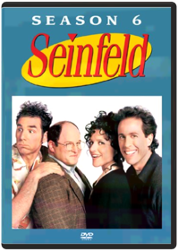 Andy Ackerman1. The Chaperone
What fabric does George suggest the Yankees use for their uniforms?
a) Rayon
b) Lycra-Spandex
c) Nylon
d) Cotton
2. The Big Salad
Who does Elaine describe as "an enigma, a mystery wrapped in a riddle"?
a) Frank Costanza
b) Newman
c) Kramer
d) Mr. Pitt
3. The Pledge Drive
What does Mr. Pitt eat with a knife and fork?
a) Granola bar
b) Snickers bar
c) Baby Ruth bar
d) Oreos
4. The Chinese Woman
What unusual article of clothing does Frank Costanza’s lawyer wear?
a) A cape
b) An army uniform
c) A kimono
d) A kilt
5. The Gymnast
What is forbidden in Mr. Pitt’s office?
a) Ink
b) Perfume
c) Smoking
d) Music
Answers:
1. Cotton
2. Newman
3. Snickers Bar
4. A Cape
5. Ink
Product Description:
DISC ONE THE CHAPERONE-When Jerry dates a beauty contestant, Kramer wants to chaperone. Mr. Pitt hires Elaine. George encourages the Yankees to make cotton jerseys. THE BIG SALAD-George has issues when his girlfriend takes credit for buying Elaine a salad. Jerry is disturbed that his girlfriend was Newman's ex. Kramer gets involved in a slow-speed chase with a suspected murderer. THE PLEDGE DRIVE-Elaine sees Mr. Pitt eating a candy bar with a knife and fork, starting a trend. George thinks everyone's giving him the finger. Jerry hosts a PBS pledge drive. THE CHINESE WOMAN-George's phone lines get crossed with Donna Chang's and Jerry dates her - but she's not Chinese. THE COUCH-Elaine dates a hunky moving man. Kramer and Poppie go into the pizza business. George tries to rent Breakfast at Tiffany's instead of reading it to impress his girlfriend. Poppie pees on Jerry's couch. THE GYMNAST-Jerry dates a Romanian gymnast. Elaine tries to tear Mr. Pitt from a 3-D poster. George's girlfriend's mother catches him eating from the trash. DISC TWO THE MOM & POP STORE-George thinks he bought Jon Voight's car. Kramer tries to save a store. Jerry crashes a party to watch the Macy's parade. THE SOUP-Kenny Bania offers Jerry a suit in exchange for a meal, but soup doesn't count. THE SECRETARY-Jerry sees his dry cleaner wearing his jacket. George's secretary out-earns him. Kramer gets Uma Thurman's phone number. Elaine finds that Barneys uses skinny mirrors. THE SWITCH-Jerry tries to pull the roommate switch. George dates a bulimic. Elaine agonizes over Mr. Pitt's busted racket. Kramer's first name is revealed and we meet his mother. THE RACE-Superman fan Jerry dates a woman named Lois, whose boss is his high-school nemesis. Elaine dates a Communist; now George wants to. Kramer works as a Santa with Mickey as his elf. Jerry races his nemesis again to settle their score. THE LABEL MAKER-Elaine and Jerry find that Tim Whatley "re-gifted" a label maker. Kramer and Newman play Risk. George is threatened by his girlfriend's male roommate. Everyone has Super Bowl fever and Jerry's sick over who joins him at the game. DISC 3 THE SCOFFLAW-George learns the truth about a friend's illness. Kramer brings in a notorious scofflaw. THE HIGHLIGHTS OF 100 (PARTS 1&2)-An hour-long look at highlights from the first 100 episodes. THE BEARD-Elaine poses as a beard for a gay man and tries to convert him. George wears a toupee and turns down a bald woman. Kramer makes money posing in police lineups. Jerry takes a lie detector test to prove he's not a fan of "Melrose Place." THE KISS HELLO-Elaine's friend loves to "kiss hello" but Jerry hates it. Kramer adorns the apartment lobby with photos to encourage tenants to know their neighbors. THE DOORMAN-Mr. Pitt's doorman intimidates Jerry. Elaine and Jerry cover themselves when a couch is stolen from the lobby. Frank Costanza moves into George's apartment. Kramer and Frank make a bra for men but argue over the name. DISC FOUR THE JIMMY-George goes into business with a buddy who refers to himself in the third person. Jerry discovers his dentist keeps Penthouse in his waiting room. Kramer comes off as mentally challenged at a benefit. THE DOODLE-George is upset by his girlfriend's sketch of him. Jerry's flea-infested apartment forces his parents into Elaine's hotel. THE FUSILLI JERRY-Elaine's boyfriend uses one of Jerry's moves. Kramer mistakenly receives license plates that read "Assman." THE DIPLOMAT'S CLUB-Jerry's plan to meet a gorgeous model is derailed. George proves that he's not racist. Elaine plans to quit her job, until she realizes she's in her boss's will. THE FACE PAINTER-Puddy paints his face for a hockey game. George tells his girlfriend he loves her. THE UNDERSTUDY-Jerry and George are accused of injuring Bette Midler so Jerry's girlfriend can take the stage in their Broadway show. Elaine has Frank translate her manicurist's conversations. Elaine meets J. Peterman and lands herself a new job.Seinfeld: Season 7 SeinfeldNo soup for you! He stole my marble rye! Bosco! Spongeworthy? ...and nobody can forget - George gets engaged! Here's your invitation to 24 original full-length episodes of the Emmy-® award-winning Season 7 of SEINFELD. All remastered with new high-definition picture and sound. In addition there are 13 hours of exclusive never-before-seen special features from the creative talents behind the show including all new interviews with Jerry Seinfeld Larry David Julia Louis-Dreyfus Michael Richards and Jason Alexander!Seinfeld: Season 8 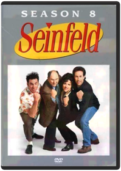 SeinfeldHere's your invitation to 22 original full-length network episodes of Season 8! Jerry Elaine George and Kramer return to DVD on June 5 with some of the funniest episodes: muffin tops Elaine dancing abstinence and of course yada yada. The deluxe four-disc boxed set is loaded with approximately 13 hours of exclusive special features including all-new interviews with Jerry Seinfeld Larry David Julia Louis-Dreyfus Michael Richards and Jason Alexander.Seinfeld: Season 9 SeinfeldSeinfeld: Season 9 is a four-disc boxed set including all 24 episodes from the ninth and final season of the long-running series including the finale and hours of exclusive never-before-seen bonus footage. The wealth of bonus features for Seinfeld: Season 9 include scenes from The Roundtable (excerpts from the one-hour table discussion) deleted scenes bloopers trivia interviews stand-up comedy footage and other behind-the-scenes bonus material. The ninth season was nominated for five Emmy Awards including Outstanding Comedy Series and features an astounding array of noteworthy episodes such as the unique backwards episode The Betrayal and the reemergence of a classic arcade game in The Frogger. The season culminates in the highly rated two-part finale which boasts an illustrious gathering of some of the show's most memorable guest stars including Larry Thomas (Soup Nazi) Wendel Meldrum (Low-Talker) Golden Globe(r) Award-winner Teri Hatcher TV journalist Geraldo Rivera and others.Seinfeld On DVD Exclusive Bonus DVD UnknThe Simpsons: The Complete First Season Studio: Tcfhe Release Date: 11/30/2007The Simpsons: The Complete Second Season Studio: Tcfhe Release Date: 11/30/2007The Simpsons: The Complete Third Season Alan Smart, Brad Bird, Carlos Baeza, David Silverman, Jeffrey LynchThe Simpsons: The Complete Fourth Season Carlos Baeza, David Silverman, Jeffrey Lynch, Jim Reardon, Mark KirklandWe are a used movie & video game store. All discs (come with DVD case & artwork) are in good condition. Discs will never have more than a few light scratches. If any problems, contact us within 7 days for replacement or refund! Purchase with confidence!The Simpsons: The Complete Fifth Season 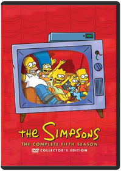 Bob Anderson, Carlos Baeza, David Silverman, Jeffrey Lynch, Jim ReardonThe entire fifth season of the animated television show, The Simpsons.
Genre: Television
Rating: NR
Release Date: 15-AUG-2006
Media Type: DVDThe Simpsons: The Complete Sixth Season Bob Anderson, David Silverman, Jeffrey Lynch, Jim Reardon, Mark Kirkland"THE SIMPSONS" THE COMPLETE SIXTH SEASON DVD COLLECTION arrives on August 16, 2005 from Fox Home Entertainment. Showcasing all 25 episodes from the acclaimed sixth season, including Part One of the season cliffhanger "Who Shot Mr. Burns?,"The Simpsons: The Complete Seventh Season Season 7 of this beloved animated series includes the famous "Who Shot Mr. Burns?" episode and Tree House of Horror VI. Chock full of extras, this season is a tremendous asset to any DVD collectionThe Simpsons: The Complete Eighth Season Bob Anderson, Chuck Sheetz, Dominic Polcino, Jim Reardon, Mark KirklandThe madcap antics of Springfield’s first family continue when the Emmy® award-winning series created by Matt Groening returns to DVD. Arriving on August 15th from Fox Home Entertainment, "The Simpsons" The Complete Eighth Season showcases all 25 episodes from the critically-acclaimed eighth season, as well as a host of bonus materials including audio commentaries from Groening and "The Simpsons" Executive Producers, Writers and Directors, as well as animatics and storyboards with optional audio commentary, a special featurette, deleted scenes, a sketch gallery and much more. As a special bonus for fans and collectors, Fox Home Entertainment will release the "The Simpsons" The Complete Eighth Season in two unique packaging options - a special Limited Edition Maggie Simpson box, as well as a collectible, illustrated gatefold digipak.The Simpsons Movie David SilvermanHomer accidentally causes an environmental catastrophe which could doom Springfield forever. Homer now must save the city and rescue his family. Springfield's usual characters and new favorites all turn up in the first ever movie length version of the hit TV show, 18 years in the making.The Simpsons: Christmas 1 Tim Long, Rob OliverFive classic Simpson family holiday misadventures! Includes Simpsons Roasting on an Open Fire," Mr. Plow," Miracle on Evergreen Terrace," Grift of the Magi" and She of Little Faith." 2003/color/92 min/NR/fullscreen.The Simpsons: Christmas 2 Tim Long, Rob OliverFeatures four Christmas-themed Simpsons episodes.The Simpsons: Treehouse of Horror Neil Affleck, Bob Anderson (VIII), Mikel B. Anderson, Wesley Archer, Carlos BaezaConsists of the following episodes: In this annual trilogy of terror, Homer attempts to kill his family in "The Shinning," Homer tries to fix a toaster and winds up altering the fabric of time itself in "Time and Punishment," and Principal Skinner serves students for lunch in "Nightmare Cafeteria." In this Halloween-themed anthology, advertising icons go berserk in "Attack of the 50 Foot Eyesores," Groundskeeper Willie invades the children's dreams in "Nightmare on Evergreen Terrace," and Homer enters a 3-D world of computer animation in "Homer 3." This Simpson showcase features a terrifying look at Bart's evil twin in "The Thing and I," Lisa creating a miniature world in "The Genesis Tub," and aliens stealing the identities of Bill Clinton and Bob Dole in "Mr. Kang Goes To Washington." In "Hex and the City," a gypsy curses Homer, bringing misery to everyone he loves. In "House of Whacks," a computer (Pierce Brosnan) takes over the Simpson house and attempts to kill Homer for Marge's love. And in "Wiz Kids," Bart and Lisa are students at a school for wizards, where they foil the evil Lord Montymort.The Sopranos: Season 1 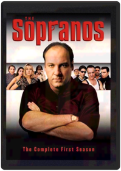 On January 10th, 1999, America was introduced to two families that would make history: The Soprano family headed by Tony Soprano, and The Soprano "family" headed by ... Tony Soprano. ' 'Four Stars! The first gotta-watch, gotta love, Gotti-like TV series of 1999. Across the board it's an A-plus.' ' - The New York Post ' 'Achieves a fresh tone to match its irresistibly winning concept.' ' - The New York TimesThe Sopranos: Season 2 Allen Coulter Tim Van PattenFor Tony Soprano, there's no such thing as business as usual. Balancing the demands of his immediate family - wife Carmel, daughter Meadow and son Anthony Jr. - witht the demands of his other family - Paulie Walnuts, Silvio Dante and Big Pussy Bompensiero - means walking a tightrope no self-respecting mobster should have to walk. With his mother and uncle plotting against him, his older sister Janice wreaking her own special kind of havoc, and the very real threat that one of his closest allies is wired by the F.B.I, Tony needs the support of his psychiatrist Dr. Melfi more than ever.
DVD Features:
Audio Commentary
Biographies
Featurette
Filmographies
Other
Scene Access
TV SpotThe Sopranos: Season 3 Allen Coulter Tim Van PattenSome suburban households have two cars. Some have two houses. But Tony Soprano has two families. This could be why the FBI is going to such lengths to wiretap his home. Why the son of his dear late friend Jackie Aprile is causing him such agita. Why a Russian housekeeper is searching for her missing leg. Why his son is vandalizing school property and his daughter is getting her heart broken. Why his wife Carmela is both consulting a psychiatrist and confessing to a priest. And it's also why Tony Soprano is still seeing Dr. Melfi for his anxiety attacks. It isn't easy heading-up the mob in New Jersey. But that's what puts dinner on the table for the two families of Tony Soprano.
DVD Features:
Audio Commentary
Biographies
Featurette
Interactive Menus
Other
Scene AccessSouth Park: The Complete First Season Trey ParkerMr. Hankey! Mecha Streisand! Cartman's Mom! And more. It all started here, in South Park's groundbreaking first season. Still going strong in its sixth season, South Park continues to be Comedy Central's highest rated and most recognized original series ever.South Park: The Complete Second Season Trey Parker, Eric StoughAll eighteen episodes from the classic second season of Comedy Central's all-time highest rated series are now available to own in an exclusive 3-disc collector's edition DVD set with "kick-ass" special features.South Park: The Complete Third Season Trey Parker, Matt Stone, Eric StoughAll 17 episodes from season three—including "Rainforest Schmainforest," "Chinpokomon," "Starvin' Marvin in Space," "Mr. Hankey's Christmas Classics," and "Brown Noise"—are featured in a three-disc set. 6 1/4 hrs. total. Standard; Soundtracks: English Dolby Digital stereo, Spanish Dolby Digital mono, French Dolby Digital stereo; Subtitles: English, French, Spanish; audio commentary. **17 episodes on 3 discs. 6 1/4 hrs.**South Park: Bigger, Longer & Uncut Trey ParkerStan, Kyle, Kenny and Cartman sneak into an R-rated movie and it warps their fragile little minds. Soon their indignant parents declare war on Canada and our young heroes are America's last hope to stop Armageddon.South Park: The Complete Fourth Season Trey Parker, Adrien Beard, Eric StoughAll 17 episodes from season four—including "The Tooth Fairy's TATS 2000," "Timmy! 2000," "Cartman Joins NAMBLA," "4th Grade," and "A Very Crappy Christmas"—are featured in a three-disc set. 6 1/3 hrs. total. Standard; Soundtrack: English Dolby Digital stereo; audio commentary. **17 episodes on 3 discs. 6 1/3 hrs.**South Park: The Complete Fifth Season Trey Parker, Eric StoughIn SOUTH PARK - THE COMPLETE FIFTH SEASON, join Stan, Kyle, = Cartman and Kenny as these four characters embark on the adventure of = growing up in a small mountain town. In the fifth season, the boys = discover a government secret, accidentally get sent to Afghanistan and = get into an extreme slugfest when 'Big Gay Al' returns, among many more = hilarious adventures. Episodes include: * It Hits the Fan * Cripple Fight * Super Best Friends * Scott Tenorman Must Die * Cartmanland * Full screen format; Dolby Digital English Stereo; closed-captioned for = the hearing-impairedSouth Park: The Complete Sixth Season Trey Parker, Eric Stough, Toni WurtsSit back and enjoy all 17 episodes of the sixth season of the show that makes you laugh your @$$ off, now available for the first time in this exclusive 3-disc collector’s edition. This season tackles such issues as child abduction, animal rights and early mammary development and its effects on society. Also, Cartman wears a dress on national television and Butters goes out of his mind. For them, it's all part of growing up in South Park.South Park: The Complete Seventh Season Trey ParkerAll fifteen episodes from South Park's hilarious seventh season are now available for the first time in this exclusive 3-disc collector's edition. Classic moments such as Cartman's attempt on Kyle's life, Jimmy and Timmy joining the "Crips" and the boys' experimentation with metrosexuality are all featured in Season Seven. So join Stan, Kyle, Cartman and Kenny for these and many more disturbing events. For them, it's just all part of growing up in South Park.South Park: The Complete Eighth Season Trey ParkerAll fourteen episodes from South Park’s out-of-control eighth season are now available for the first time in this exclusive 3-disc collector’s set. Stan, Kyle, Kenny and Cartman find themselves in the middle of hot-button political issues and celebrity shenanigans. Season eight is capped off with a very special Christmas episode done in the way only South Park does Christmas! For these four boys, it’s all part of growing up in South Park!South Park: The Complete Ninth Season Trey ParkerAll fourteen episodes from South Park’s infamous ninth season are now available for the first time in this exclusive 3-disc collector’s set. This season features Kenny’s epic battle between heaven and hell, uprising of redheads and adventures surrounding a certain closet. For these boys, it’s all part of growing up in South Park!South Park: The Complete Tenth Season All fourteen monumental episodes from South Park’s tenth season are now available in this exclusive three-disc collector’s set. Join the boys as they witness the death of their beloved Chef, band together to defeat a virtual villain who is out to destroy the world and wrestle with the disturbing consequences of seeing the Prophet of the Muslim people on a popular cartoon. For them, it’s all part of growing up in South Park.South Park: Christmas in South Park South ParkMr. Hankey the Christmas Poo and Charlie Manson host two touching holiday episodes: with them and your favorite South Park characters you'll rediscover what Christmas is really all about. First, sing along with "Mr. Hankey's Christmas Classic," a hilarious collection of carols—including Kyle and his family doing a particularly irreverent, a cappella version of "Dreidl Dreidl Dreidl," and there's nothing like Satan's "Christmastime in Hell"—surprising who you'll see down there. And Mr. Hankey definitely leaves his mark on his finale, too. The next episode is "Merry Christmas, Charlie Manson": Stan joins a trip to Cartman's grandma's house where the Cartmans are happily surprised that Uncle Howard is able to show up, having broken out of jail with his cellmate Charlie Manson.
The tape has a bonus third program: the "outrageous British documentary" Goin' Down to South Park, a half-serious, half-tongue-in-cheek look at the creators and production crew who animate South Park. Trey Parker and Matt Stone, from their hot tub, discuss the origin of South Park and how the merchandising, money, and fame have made their lives so much easier. —Erik MackiSouth Park: The Passion of the Jew Join the "South Park" gang in SOUTH PARK: THE PASSION OF THE JEW as Kyle finally sees The Passion and is forced to admit that Cartman has been right all along. Meanwhile, many of the hardcore fans of the film unite together to carry out the film’s message under the leadership of Cartman. In the bonus episode "Christian Rock Hard," Cartman, Butters and Token form a Christian rock band and rise to the top of the Christian rock charts with their own messages of faith. The second bonus episode, "Red Hot Catholic Love," centers around a trip to the Vatican and enduring real-life challenges of a video game from 1982.Spawn: The Ultimate Collection 
Adult, stylish, and more than a little mean, this full-length animated tale has one very strong thing going for it—it knows how to milk "cool." The animation is superior to anything recently devoted to a superhero...or super-antihero, in this case. Al Simmons was a government assassin before he was burned to death and sent to hell (plot summary's starting out nicely, isn't it?). After making a particularly bad deal with the devil—to lead Satan's dark armies in exchange for seeing his wife again—Spawn is let loose upon the world. He immediately whacks three mob hit men, making his presence known and getting himself into all sorts of trouble. Spawn is also visited by the Clown, an obese, disgusting Beatrice, guiding our third-degree-burned Dante through this hellish, topside world. There are other nasty characters, but in this first segment a very gratuitous inclusion of a child murderer goes too far for even this mature fare. Spawn isn't fun; there's very little joy in any of this. But the point isn't fun—it's brutal, adult-comic style. And there's plenty of it. —Keith Simanton
Todd McFarlane's Spawn 2
From the mind of comic-book maestro Todd McFarlane comes the second season of episodes of the animated Spawn. Highly stylized animation and provocative story lines make Spawn a sophisticated cartoon sometimes more appropriate for older audiences. Murder victim Al Simmons has returned from hell to earth as a "hellspawn," a soldier for the army of darkness sent to collect more souls for hell. In these episodes, Spawn meets the man who assassinated him and becomes suspicious of the organization that ordered him killed. Jason Wynn, the leader of the group, plans to sell weapons of mass destruction stolen from the military. Spawn's former wife, Wanda, has since remarried Terry Fitzgerald, with whom Spawn must reconcile. Terry is hot on the trail of the missing arms, and Wynn and his assassins, including the highly trained Merrick, set out to kill Terry, Wanda, and their daughter, Cyan. Spawn foils the plot while realizing the hard truth that Wanda has a new life. —Shannon Gee
Spawn 3: The Ultimate Battle
The third chapter of this compelling HBO miniseries answers a number of questions—namely, who is the omnipotent old man who hides in the shadows and why is the mysterious Asian reporter (Jade) investigating the alley murders? Spawn has reached a crossroads, and he must choose between the forces of darkness and light. But it's not clear-cut: Al (Spawn) must deliberate over the seemingly minor differences that separate heaven and hell in his world. As a former assassin for the NSA, he "opened the eyes of hell" with his iniquitous deeds of depravity; therefore, his journey to hell was preordained. But this particular section of the series intriguingly asks, What if you had no choice, and killing was not just the only way out of a squeeze but was also your fate? Intellectual stuff, indeed. But as with the rest of the series, a profound metaphysical puzzle is brought to the fore without justifying it with an answer. It's frustrating, but also keeps you firmly planted in your chair, pondering conundrum after conundrum. —Jeremy StoreySpider-Man: The New Animated Series Brandon Vietti, Audu Paden, Sean Frewer, Vincent Edwards (III), Ezekiel NortonWhen a nasty bite by an irradiated spider endows teenager Peter Parker with miraculous, arachnid-like powers, his death defying heroism wins him admiration from those in need. But being a superhero has its drawbacks...especially when you're in college! As Peter gains the trust of his friends, the police call him a vigilante. But he meets the challenge by exercising his wonderful powers for the good of all. Multi-talented performer Neil Patrick Harris (Undercover Brother, Starship Troopers), television star Ian Ziering ("Beverly Hills 90210"), and singer-songwriter Lisa Loeb ("Cake and Pie"), lend their vocal talents to this thrilling, computer-animated version of the comic book classic and mega-hit feature film, Spider-Man.SpongeBob SquarePants: It's A SpongeBob Christmas! 
Plus Bonus Episodes (Blu-ray Exclusive):Ripped Pants
SB-129
Texas
The Graveyard Shift
Something Smells
Jellyfishing
Dying for Pie
Wormy
F.U.N.
Club SpongeBobStar Wars: The Clone Wars - Season 1-5 Star Wars-Clone WarsThe complete seasons one to five of the CGI-animated TV show. Set in a galaxy far, far away after the events of 'Star Wars Episode II - Attack of the Clones' (2002) and before 'Star Wars Episode III - Revenge of the Sith' (2005), the series follows the adventures of Obi-Wan Kenobi (voice of James Arnold Taylor), his apprentice, Anakin Skywalker (Matt Lanter) and rebellious female Jedi fighter Ahsoka Tano (Ashley Eckstein).Star Wars: The Clone Wars - The Lost Missions Against a backdrop of ever-shifting loyalties, uneasy alliances and ancient hostilities, the conflict between the Republic and the Separatists ramps up, setting the stage for Darth Sidious' ultimate act of treachery against the Jedi. In these uncertain times, some of the deepest mysteries of the light and dark sides of the Force are revealed as an intrepid clone trooper uncovers a shocking conspiracy, Anakin Skywalker's closest relationship is tested to its limits, and Master Yoda makes a discovery that could forever change the balance of power in the galaxy. Complete your collection and experience all the wonder, intrigue, action and suspense of THE LOST MISSIONS in 13 must-own episodes — plus a Behind-The-Scenes Documentary — as this thrilling chapter of the STAR WARS saga comes home on Blu-ray and DVD for the first time!Star Wars Rebels: Complete Season One A spark of rebellion ignites in Star Wars Rebels: Complete Season One! Star Wars Rebels continues the epic tradition of the legendary Star Wars saga with exciting action-packed episodes. It is a dark time in the galaxy as the evil Galactic Empire rules with an iron fist. Imperial forces have occupied a remote planet, ruining the lives of its people. A ragtag band of rebels — Ezra, Hera, Kanan, Sabine, Zeb and Chopper — have taken a brave stand against the ruthless oppression of the Empire in a fight to restore peace and freedom to the galaxy.Star Wars Rebels: Complete Season Two The epic battle to defeat the evil Empire continues in STAR WARS REBELS: COMPLETE SEASON TWO! As Ezra continues his journey to become a Jedi under Kanan's guidance, the crew of the Ghost bands together with a secret rebel cell and ex soldiers from the Clone Wars to join a fledgling alliance to restore peace and freedom to the galaxy. But the dark side looms large as Darth Vader dispatches new Inquisitors, setting the stage for a climactic showdown in which terrible truths will be revealed and the lives of our heroes will be changed forever.Star Wars Rebels: Complete Season Three Join the Ghost crew as it prepares for its biggest mission yet in Star Wars Rebels: Season Three! The story of the Ghost crew is far from over. While Sabine confronts new challenges on her home world of Mandalore, Ezra's growing power as both a Jedi and a rebel leader helps the rebellion acquire new resources and recruits for the fight ahead. However, the Imperial effort to eliminate the rebellion is now being led by the coldly analytical Grand Admiral Thrawn, whose strategic, tactical and cultural insights make him a threat unlike any they have faced before.Star Wars: Droids Robin Lee, T.M. ChristopherAnimated double feature of "The Pirates and the Prince" and "Treasures of the Hidden Planet" featuring various Star Wars characters, centered around C-3PO and R2-D2.Star Wars: Ewoks star war adventure ...animatedStranger Things Season 1 4-disc DVD / Blu-Ray Collectors Edition Box Set Stranger Things Season 1 4-disc DVD / Blu-Ray Collectors Edition Box Set (Exclusive VHS Box Style Packaging)Tales From the Crypt: The Complete First Season Walter Hill, Robert Zemeckis, Richard DonnerBased on the legendary and gruesome EC Comics from publisher William Gaines, this horror anthology featured stories of murder, the super natural, gore and humor and always had a twist ending of sorts. Some of Hollywood's biggest names took part, either working in front or behind the camera. Hosting duties fell to everyone's favorite decaying corpse, the Cryptkeeper. The success of this series spawned a Saturday morning cartoon series (Tales From the Cryptkeeper), a short-lived Saturday morning game show on CBS (Secrets of the Cryptkeeper's Haunted House) and lots of merchandise. Two feature films (Demon Knight and Bordello of Blood) were also produced and released in the late 90's. The TV series originally aired on HBO, but was later syndicated to Fox, the Sci-Fi Channel, and most recently AMC. Despite being a short season (only 6 episodes), Season 1 enjoyed the highest ratings in its HBO airings.Tales From the Crypt: The Complete Second Season Arnold Schwarzenegger, Charlie Picerni, Chris Walas, David Burton Morris, Fred DekkerTwo scary! Welcome, fiends. Back for more deadtime stories, hmm? Then settle in with these devious die-monds of die-abolical delight - all 18 uncut (but variously stabbed, electro-volted, haunted, twisted, incarcerated, incarnated, voodoo-ized and even vampirized) episodes from two-riffic Season 2 of Tales from the Crypt! The Cryptkeeper is again your gleefully macabre host for a frightfest of classic E.C. Comics stories involving a for-the-money honey (Demi Moore) hoping for a big, fat inheritance; a cartoonist (Harry Anderson) whose creations come to life (and death); a ventriloquist (Don Rickles) and an idolizing wannabe (Bobcat Goldthwait); and poker players for whom a losing hand could mean exactly that. Ante up for these and more tales. We think you'll agree they're absolute monsterpieces.
DVD Features:
Documentary
Interactive Menus
OtherTales From the Crypt: The Complete Third Season 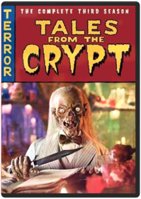 Steve Perry, Russell MulcahyWhat's sinew, weirdos? All of you who say "This fabulous third-season collection of Tales from the Crypt" go to the head of the crass. And take your best fiend with you! Yes, that die-abolical punster and bone-a-fide ghoul of your dreams the Crypt Keeper is back to host this scare-rific collection of all 14 complete and uncut episodes from Season 3 of the series that ran seven memorably spooktacular seasons. Among the tales spilling out of the vault are Loved to Death with Mariel Hemingway; Top Billing starring Jon Lovitz; and Dead Wait with Whoopi Goldberg. Doo yourself a favor and dig into this merrily macabre mix.
DVD Features:
Music Video:Crypt Jam
Other:A Tall Tales Panel: A Dissected Look at Tales from the Crypt Season 3 A Tales from the Crypt Reunion: A Panel DiscussionTales From the Crypt: The Complete Fourth Season Kyle Mac Lachlan, Joel Silver, Gilbert AdlerMonsters. Madness. Mayhem. BAD PUNS! What kind of bonehead would do this? Oh, that kind of bonehead: the Crypt Keeper. Yes, four the beast in humor and horror, this is it: all 14 complete, uncut Season 4 episodes hosted by that netherworld naughty boy, the Crypt Keeper. Offered four your warped amusement are Split Personality, with a lounge lizard getting more than he bargains four when he marries identical twins; Werewolf Concerto, with Timothy Dalton on the hunt four a lupine fiend; Beauty Rest, with Mimi Rogers as an actress who'd kill four a part. Plus Brad Pitt, Treat Williams, and Cathy Moriarty are here four more fright-'n'-fun tales. Did we mention these are all in Season 4? Go four it!
DVD Features:
Audio Commentary
FeaturetteTales From the Crypt: The Complete Fifth Season Bob Gale, Elliot Silverstein, Gary Fleder, Gilbert Adler, Gregory WidenTomb it may concern. Yes, you. No one else is reading this, right? Besides, you're the ideal person for this happily haunted collection of scares and silliness ? someone warm and bleeding. Sorry, breathing. The Cryptkeeper delivers more keepers (and terrorific Spookcial Feartures) with this atmosfearic Season 5. Ready to delight your feverishly warped mind are Forever Ambergris, with Steve Buscemi and Roger Daltrey portraying war photographers; Two for the Show, with Traci Lords, David Paymer and Vincent Spano embroiled in a tale of wife and death; Well Cooked Hams, with Martin Sheen and Billy Zane putting hocus pocus in focus as rival magicians; plus 10 more eerie encounters of fate, fiends and flat-out funniness. Lullaby and good fright, kiddies!Tales From the Crypt: The Complete Sixth Season 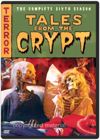 It's that time of fear again! So if you've been missing the Crypt Keeper, here's a chance to improve your aim. But be warned: It'll be a fright to the finish. The cadaverous cut-up is your host for a 15-episode die-gest based on classic horror comics from back in the day and featuring a parade of characters who are variously merciless, clueless, topless and headless. Hank Azaria, Shelley Hack, Isaac Hayes, Richard Lewis, John Lithgow, Wayne Newton, Isabella Rossellini, Rita Rudner and Humphrey Bogart (you read that right) are among the stars. And vampires, mad doctors, killers, ghosts and adulterers are eager to come out and play. We could tell you more, but that would be wrong. You do know rot from wrong, don't you?Tales From the Crypt: The Complete Seventh Season VariousTales From the Crypt: Demon Knight & Bordello of Blood Ernest R. Dickerson, Gilbert AdlerStudio: Uni Dist Corp. (mca) Release Date: 09/07/2004 Rating: RTeenage Mutant Ninja Turtles: Season 1 Meet the Teenage Mutant Ninja Turtles the most irreverent reptiles in the universe! These are the first classic animated episodes that tell the origination of Leonardo Michaelangelo Raphael and Donatello. Once tiny pet store turtles an accident hurtles them into the city sewer where mutant goo transforms them into something... well something else! Fighting for good against the malevolent Shredder and his Technodrome these pizza-eating daredevils are a funny phenomenal foursome.System Requirements: Running Time 93 MinFormat: DVD MOVIE Genre: CHILDREN/FAMILY Rating: NR Age: 5 UPC: 012236119135 Manufacturer No: 11913Teenage Mutant Ninja Turtles: Volume Two Join the hottest Heroes in a Half-Shell - Leonardo Michelangelo Raphael and Donatello - as they battle for good against gnarly Ninja bad guys in Season Two of Teenage Mutant Ninja Turtles!DVD Bonus FeaturesFull Screen2.0 Digital Stereo SerroundDigitally Enhanced for Superior ClaritySystem Requirements: Running Time 289 MinFormat: DVD MOVIE Genre: CHILDREN/FAMILY Rating: NR UPC: 012236174004 Manufacturer No: 17400Teenage Mutant Ninja Turtles: Volume 3 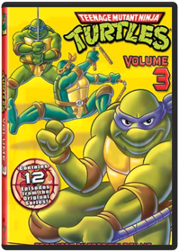 12 episodes from Season 3 of the Original TV Series: Beneath These Streets, Turtles on Trial, Attack of the 50 Foot Irma, Maltese Hamster, Sky Turtles, Old Switcheroo, Burne's Blues, Fifth Turtle, Enter the Rat King, Turtles At the Earth's Core, April's Fool, and Attack of Big MACCTeenage Mutant Ninja Turtles: Volume 4 Includes 12 episodes from Season 3 of the Original TV SeriesTeenage Mutant Ninja Turtles: Volume Five Includes 12 episodes from Season 3 of the Original TV SeriesTeenage Mutant Ninja Turtles: Volume 6 Artist Not ProvidedThe Turtles are back with 12 action-packed episodes from the original TV series!! Episdoes include: The Turtle Terminator, The Great Boldini, The Missing Map, The Gang's All Here, The Grybyx, Mr. Ogg Goes to Town, Shredderville, Bye, Bye Fly, The Big Rip-Off, The Big Break-In, The Big Blow Out amd Plan 6 from Outer Space.Teenage Mutant Ninja Turtles: Season 4 You'll yell, "Cowabunga!" as the turtles shred their way into your heart in 40 episodes from Season Four of their awesome hit series. Michaelangelo, Raphael, Leonardo, and Donatello are bringing it to the most dastardly ensemble of evil-doing freaks, mutants, and bad dudes you've ever seen. Don't even think of missing the most radical action ever to mutate onto DVD.Teenage Mutant Ninja Turtles: Season 5 Artist Not ProvidedDishing up Season 5 in 3 hot DVDs! Dudes! Your order for hot and fresh kung-fu adventures is ready. In 18 wicked episodes from the original series, Leonardo, Michaelangelo, Raphael, and Donatello deliver totally radical mutant action right to your door - and all the tasty extras you want are included. Cowabunga! Any way you slice it, their way of saving the day is gnarly.Teenage Mutant Ninja Turtles: Season 6 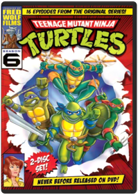 KABOOM! In 1984 the Turtles exploded from the pages of a comic book, and ZAP! - they totally mutated into the coolest reptiles in the universe. In all 16 gnarly episodes from Season 6 of the Original TV series, Leonardo, Michelangelo, Raphael, and Donatello open up the classic action that made "Cowabunga!" a household word. Don't miss your chance to knock out the bad guys and save the day - POW!Teenage Mutant Ninja Turtles: Season 7 Celebrate the 25th anniversary of the TEENAGE MUTANT NINJA TURTLES with all 4 Classic Season 7 slices on DVD in this Complete Season 7 Set! It’s been 25 awesome years (whoa!) since four turtles fell into the sewers and were transformed into radical human-like creatures. Now the classic TV series about their gnarly adventures has gone on to be a righteous hit with fans everywhere, making "Cowabunga!” a household word.Teenage Mutant Ninja Turtles: Season 8 Break out of your shell with the Complete Season 8 in these ninja-powered adventures. The Green Machine is back with heart-pounding , pizza-munching, right-outta-the-sewer ninja action! The gang’s all here – Michelangelo™, Leonardo™, Raphael™, and Donatello™, and their wise sensei, Splinter – as they battle enemies from our time, and beyond, to protect the citizens of the city they call home, even banishing archenemies, Shredder™ and Krang™, to Dimension X™. Discover the intriguing, darker atmosphere and new theme song that defined this groundbreaking season. These eight dynamic adventures will get your pulse pumping with mutant power! Cowabunga, dudes! Eight radical episodes include: "Get Shredder!" "Wrath of the Rat King," "State of Shock," "Cry H.A.V.O.C.!" "H.A.V.O.C. in the Streets," "Enter: Krakus," "Cyber-Turtles," and "Turtle Trek."Teenage Mutant Ninja Turtles: Season 9 Join the Teenage Mutant Ninja Turtles as they face off against new opponents: the evil Lord Dregg and Hi-tech, while also fighting against their own uncontrollable mutations in the mind-bending Season 9! With the help of Carter, a new ninja ally, Michelangelo, Leonardo, Raphael, and Donatello - struggle to stop Lord Dregg from enslaving Earth, while overcoming Replicon, a battle droid that regenerates after each defeat. Featuring nonstop, sewer to-street action, these eight adventures will leave you wanting more turtle power! Includes 8 Shell-Busting Episodes: The Unknown Ninja, Dregg of the Earth, The Wrath Of Medusa, The New Mutation, The Showdown, Split-Second, Carter the Enforcer, Doomquest.Teenage Mutant Ninja Turtles: Season 10 Roy Burdine, Chuck PattonLeonardo, Donatello, Raphael and Michelangelo are back in the classic final season that pits turtles from the past and present against the evil Lord Dregg and his minions. Determined to enslave mankind, Dregg will stop at nothing to win - causing a piece of the sun to crash into Earth, opening a giant portal to pull the planet into Dimension X, and even draining the life energy from the Teenage Mutant Ninja Turtles! Carter soon realizes that the only way to defeat Dregg, Krang and Shredder is to bring the Turtles' past selves to the present - double the Turtle power! But will they make it in time before Dregg's invasion is complete? Featuring time-warping serious Turtle muscle, season 10 is a totally tubular finale!Teenage Mutant Ninja Turtles: Season 1: Part 1 Chuck PattonIn 2003, 4Kids and Mirage Studios joined forces to bring those heroes on the half-shell back to TV...but this time, they mean business.
This Teenage Mutant Ninja Turtles series was inspired by the original, darker and edgier comics that made their debut in 1984. With significant input from Teenage Mutant Ninja Turtles, co-creator Peter Laird, the episodes are based on those early storylines and a graphic visual style comic fans love.
Watch as the Turtles evolve from four talented but inexperienced martial arts "brawlers" into a well-honed fighting unit taught by their sensei Master Splinter. Join them as they take on they take on their arch nemesis, the Shredder. Be there as each saga unfolds and our heroes learn that teamwork is one of their most powerful assets.
Contains 12 episodes on 2 discs!Teenage Mutant Ninja Turtles: Fast Forward: Volume 1: Future Shellshock! Artist Not ProvidedThe Turtles and Splinter suddenly find themselves in a futuristic world inhabited by a "melting pot" population of humans and aliens. Who's responsible for this mess? Why none other than Cody Jones, Casey and April's fourteen-year old great grandson, who accidentally pulled the Turtles through a "time window" to the year 2105!
Future Shellshock contains 13 action-packed episodes on 2 discsTeenage Mutant Ninja Turtles: Fast Forward: Volume 2: The Day of Awakening The Day of Awakening is at Hand!
When the entire populatoin of Moonbase Bishop goes missing, it appears that Sh'Okanabo has jump started his plan to take over the Earth. The Turtles stage an assault on the base, only to find a bigger, baddder Sh'Okanabo - with an army of Kanabo Drones hiding on the dark side of the moon! And, to add to the chaos, Darius continues to ruin the lives of the Turtles with his evil "Dark Turtles" as he tries to take over Cody's company.
Contains 13 exciting episodes on 2 discs.Terminator: The Sarah Connor Chronicles: The Complete First Season The mother of all destiny. Her son, the future leader of mankind. Their protector, a terminator from the future. Together they must take back the future as Sarah Connor (300's Lena Headey) prepares her son to fight the war against machines determined to annihilate the human race. The clock is ticking. Can they stop Judgment Day? The man-vs.-machine tale that's thrilled millions gets a reboot in this series set after the events of Terminator 2: Judgment Day. Now the battlefield has shifted to the present. Will John Connor (Heroes's Thomas Dekker) seize his destiny? Will a cell phone salesman's chess program evolve into Skynet? Can the sweet but deadly cyborg (Summer Glau of Firefly) be trusted? Answers – and the fight for the future – are here and now.Terminator: The Sarah Connor Chronicles: The Complete Second Season Bill Eagles, Bryan Spicer, Charles Beeson, David Nutter, Félix Enríquez AlcaláThe time: today. The stakes: all our tomorrows. A nascent AI, assisted by droids, continues to edge toward world domination and the ruin of humankind. It accepts no limits. It fears no one. Except John Connor. The machines know John, now 16, is the future head of the resistance. They know he is growing in abilities. They must find and terminate him. But Sarah Connor is there, protecting and instructing her son as he becomes the man he’s destined to be. The hunt is on in a season of powerful revelations, breathless pursuits and bravura effects. A mysterious 3-dot symbol (do UFOs provide a clue?), a girlfriend for John (is Cameron jealous?), ZeiraCorp (can it master the renegade software called Turk?) – Season 2’s 5-disc action arsenal is locked, loaded, ready to amaze.Transformers: Season 1 John Gibbs, John Walker, Peter WallachThe 1985 series Tatakae Cho Robot Seimetai Transformers ("Fight Super Living Robots Transformers") was a U.S.-Japanese coproduction, written in America and animated in Japan. Based on a line of robot toys from Takara—licensed to Hasbro in America—that could be reconfigured into cars, trucks, planes, etc., it spawned numerous sequels and a feature. Civil war rages on the planet Cybertron between the virtuous Autobots and the evil Decepticons. Both sides launch crews into space to find new energy sources, but the ships crash on Earth and are buried in lava. When the robots awaken four million years later, the Decepticons, led by the dictatorial Megatron, want to drain the planet of its resources, enslaving or destroying mankind. The Autobots ally with humanity and befriend oil-rig worker Spike Witwicky. The Saturday morning-style cheat of cutting to a logo, rather than animating transitions, and the frequent pauses for commercial breaks make for very choppy storytelling. The designs of the robots are interesting but lack the graphic sophistication of Yoshiyuki Tomino's Gundam Mobile Suits. The animation is very limited, and the choreography of the battle sequences lacks the panache of Tomino and other more talented directors. Like Robotech, Transformers will appeal most strongly to adults who watched the show as kids: it's remained popular through Web sites, role-playing games, fan fiction, and a lively trade in the original toys. Serious students of anime will find this early series of historic interest. Unrated; suitable for age 6 and up: Robot vs. robot violence. —Charles SolomonTransformers: Season 2 Part 1 Al Kouzel, Andy Kim, Bob Kirk, Bob Matz, Bob TreatEarth is the battleground, control of the Universe is the prize, and the only defense is an army of Autobots able to transform into massive fighting machines as powerful as their enemy—the deadly Decepticons. Each boxed set includes 2 limited edition cels of Transformer characters. All episodes are in chronological order based on original airdate.
Episodes: AUTOBOT SPIKE • CHANGING GEARS • CITY OF STEEL • ATTACK OF THE AUTOBOTS • THE TRAITOR IMMOBILIZER • AUTOBOT RUN • ATLANTIS, ARISE! • MACHINE REBELLION • ENTER THE NINJA • A PRIME PROBLEM • THE CORE • INSECTICON SYNDROME • DINOBOT ISLAND #1 • DINOBOT ISLAND #2 • MASTER BUILDERS • AUTO BERSERK • MICROBOTS • MEGATRON’S MASTER • PLAN #1 • MEGATRON’S MASTER PLAN #2 • DESERTION OF THE DINOBOTS #1 • DESERTION OF THE DINOBOTS #2 • BLASTER BLUES • A DECEPTICON RAIDER IN KING ARTHUR’S COURTTransformers: Season 2 Part 2 Al Kouzel, Andy Kim, Bob Kirk, Bob Matz, Bob TreatBased on a line of robots from Takara that was licensed to Hasbro, Transformers sparked a craze for metamorphic toys in the mid-'80s. Each robot-character could be reconfigured to form a car, a tank, a plane, etc. The Transformers series (Tatakae Cho Robot Seimetai Transformers or Fight Super Living Robots Transformers) was written in America, but animated in Japan. The 24 episodes in this collection, which ran between October 1985 and January 1986, conclude the second season and lead up to Transformers 2006. Each episode forms a self-contained story, with little in the way of larger character arcs or plot developments tying them together. Although the cast has expanded, the Autobots remain the good guys who defeat the bad guy Decepticons, and no one expects anything else. Although the character designs and animation are Japanese, the direction is pure American Saturday morning: instead of creating effective transitions, the filmmakers just cut to a shot of the logo—a standard practice in Hanna-Barbera kidvid. Web sites, role-playing games, fan fiction, and a brisk commerce in the original toys have kept Transformers alive in the hearts of its fans. But like Robotech, Transformers will appeal most strongly to nostalgic adults who watched the show as kids. (Unrated: suitable for ages 6 and older: robot vs. robot violence) —Charles SolomonTransformers: The Movie Nelson ShinMint Condition! Collector's Edition! Ships within 24 hours!!Transformers: Season 3 Part 1 Andy Kim, Peter Wallach, Ray LeeTransformers Season 3 Box Set Part 1 video Animated; Standard Screen; Dolby Digital 5. Transformers Season 3 Box Set Part 1 film 1 ReTransformers - Season 3: Box Set - Part 1 DVD: A special collector's edition boxed set containing the first 16 episodes of the third season of TRANSFORMERS, the mega-popular animated television series based on one of most successful toy lines ever made. Each digitally remastered episode is presented in chronological order based on original airdate..Transformers: Season 3 Part 2 / Season 4 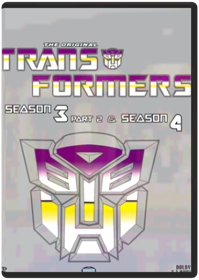 Andy Kim, Peter Wallach, Ray LeeTrue Blood: Season 1 TRUE BLOOD chronicles the backwoods Louisiana town of Bon Temps... where vampires have emerged from the coffin, and no longer need humans for their fix. Sookie Stackhouse (Anna Paquin, Academy Award®-winner for “The Piano”) works as a waitress at the rural bar Merlotte's. Though outwardly a typical young woman, she keeps a dangerous secret: she has the ability to hear the thoughts of others. Her situation is further complicated when the bar gets its first vampire patron - 173-year old Bill Compton (Steven Moyer, "Quills") - and the two outsiders are immediately drawn to each other. Delivering the best of what audiences have come to expect from Creator and Executive Producer Alan Ball (writer of Oscar®-winning Best Picture "American Beauty", creator of the Emmy® Award-winning HBO® series “Six Feet Under"), TRUE BLOOD is a dark and sexy tale that boldly delves into the heart - and the neck - of the Deep South.True Blood: Season 2 Adam Davidson, Daniel Minahan, John Dahl, Michael Cuesta, Michael LehmannWhen we last checked in with Sookie Stackhouse, the mystery surrounding a Bon Temps serial killer had finally been solved, to the town’sinfinite relief. Sookie is thrilled that her vampire soulmate, Bill Compton, has escaped with his life (or is it death?) after coming to her daylight defense. On other fronts, Sookie’s pal Tara Thornton sets downnew roots with an affluent benefactor, Maryann Forrester; Sam Merlotte resolves to get in shape-shift shape after a forest foray; roguish brother Jason finds new purpose with an anti-vampire sect; and detectiveAndy Bellefleur licks his wounds after being proven wrong about Jason’s guilt. But just as things are settling down, some deadly new twists threaten to ratchet up the saga of Sookie Stackhouse to bloody new heights!
DVD Features:
Audio Commentary
Featurette
OtherTwin Peaks: The First Season Caleb Deschanel, David Lynch, Duwayne Dunham, Lesli Linka Glatter, Mark FrostTwin Peaks devotees, who have kept the mystery alive on myriad Web sites, will jump at the chance to return to the spooky town that might just be the anti-Mayberry. Rarely syndicated, the Twin Peaks television series has lost none of its quirky and queasy power to get under your skin and haunt your dreams. So brew up a pot of some "damn fine coffee," dig into some cherry pie, and lose yourself in David Lynch and Mark Frost's murder mystery and soap opera, which unfolds, in one character's words, "like a beautiful dream and terrible nightmare all at once." Twin Peaks was a pop culture phenomenon for one season at least, until the increasingly bizarre twists and maddening teases so confounded audiences that they lost interest in just who killed Laura Palmer (Sheryl Lee). This series was a career peak for most of its eclectic ensemble cast, including Kyle MacLachlan as straight-arrow FBI Special Agent Dale Cooper, Michael Ontkean as local Sheriff Harry S. Truman, Sherilyn Fenn as bad girl Audrey Horne, Peggy Lipton as waitress Norma Jennings, and Catherine Coulson as the Log Lady. Alumni enjoying current success include Lara Flynn Boyle ("The Practice"), as good girl Donna Hayward, and Miguel Ferrer ("Crossing Jordan"), hilarious as forensics expert Albert Rosenfield (who has absolutely no "social niceties"). This four-disc set contains the first season's seven episodes, minus, curiously, the series pilot. Newcomers will be scratching their heads over the "Previously on Twin Peaks" prologue, but an accompanying booklet sums up the story. Special features include episode introductions by the Log Lady (originally broadcast on Bravo), commentaries by assorted episode directors (but not Lynch), and features from the archives of the fanzine Wrapped in Plastic. —Donald LiebensonTwin Peaks: Fire Walk with Me 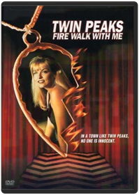 Sheryl Lee, Kyle MacLachlan. The enigmatic and fascinating movie furthers the mystery of Laura Palmer, serving as both an ending and a beginning to the hit series. 1992/color/134 min/R/widescreen.The Walking Dead: Season 1 Frank DarabontAfter waking from a coma in an abandoned hospital, police officer Rick Grimes finds the world he knew gone - ravaged by a zombie epidemic of apocalyptic proportions. Nearby, on the outskirts of Atlanta, a small encampment struggles to survive as 'the dead' stalk them at every turn. Can Rick and the others hold onto their humanity as they fight to live in this terrifying new world? And, amidst dire conditions and personal rivalries, will they ultimately survive one another? AMC's The Walking Dead is an epic, survival adventure series from the director of The Shawshank Redemption and the producer of The Terminator and Aliens.Fear the Walking Dead: Season 1 Not AvailableLiving in the same universe as The Walking Dead, Fear the Walking Dead is a gritty drama that explores the onset of the undead apocalypse through the lens of a fractured family. Set in a city where people come to escape, shield secrets, and bury their pasts, a mysterious outbreak threatens to disrupt what little stability high school guidance counselor Madison Clark and English teacher Travis Manawa have managed to assemble. The everyday pressure of blending two families while dealing with resentful, escapist, and strung out children takes a back seat when society begins to break down. A forced evolution, a necessary survival of the fittest takes hold, and our dysfunctional family must either reinvent themselves or embrace their darker histories.
Special Features:
Audio Commentaries
Pilot Episode: The Widescreen Version
Deleted Scenes
Inside FEAR THE WALKING DEAD
FEAR: The Beginning
Five Things You Need to Survive
Locations: LA & Vancouver
Quarantined
Stunts and Anarchy
The Faces of FearWalking With Dinosaurs Get ready to go back 65 million years and come face to face with the largest creatures ever to roam the landscape with this BBC documentary series. Amazing computer graphics and the latest scientific data tell the story of how the dinosaurs lived, thrived and ultimately perished. Kenneth Branagh narrates. 3 3/4 hrs. on two discs. Widescreen (Enhanced); Soundtrack: English Dolby Digital Surround, Subtitles: English, Spanish; "making of" documentary.Wonderfalls "From the producer of Angel and Firefly comes Wonderfalls with 9 never aired episodes. Although a recent graduate of Brown University, Jaye Tyler decides to ignore her degree, live in a trailer and work at a tourist gift shop in Niagara Falls called Wonderfalls—-much to the despair of her well-to-do family. But Jaye’s aimless life takes a startling turn after a lion figurine begins talking to her. Her family calls it an "episode," but Jaye knows better.
Fearing for her sanity, Jaye nevertheless starts doing exactly what an increasing number of inanimate objects tell her to do and is amazed when her outrageous actions begin changing people’s lives in unexpected ways. "The X-Files: Season 1 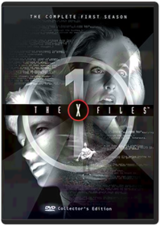 Daniel Sackheim, David Nutter, Fred Gerber, Harry Longstreet, Jerrold FreedmanGet reacquainted with Dana Scully (Gillian Anderson), Fox Mulder (David Duchovny), and all the clever plots dealing with the occult, monsters, urban legends, conspiracy theories, and the rest that made this show an uncanny hit.The X-Files: Season 2 Chris Carter, Daniel Sackheim, David Nutter, James A. Contner, James Whitmore Jr.Now you can own the entire second season of THE X-FILES. ALL 25 classic episodes are available for the first time in this exclusive collector's edition. From "Little Green Men," "Duane Barry," and "Ascension" to "One Breath," "Irresistible," "Humbug" and "Anasazi," these episodes are a must for every X-Files fan.
This 7-disc set also includes some of your favorite scenes dubbed in languages from around the world and episode listings for the show's entire seven seasons.The X-Files: Season 3 Chris Carter, David Nutter, Jim Charleston, Kim Manners, R.W. Goodwin7 dual layered discs with all 24 episodes from the 3rd season:
Disc 1 - The Blessing Way, Paper Clip, D.P.O., Clyde Bruckman's Final Repose, deleted scenes, international clips
Disc 2 - The List, 2Shy, The Walk, Oubliette, deleted scenes, international clips
Disc 3 - Nisei, 731, Revelations, War of the Coprophages, deleted scenes, special effects clips, international clips
Disc 4 - Syzygy, Grotesque, Piper Maru, Apocrypha, special effects clips, commentary, international clips
Disc 5 - Pusher, Teso Dos Bichos, Hell Money, Jose Chung's "From Outer Space", special effects clips, international clips
Disc 6 - Avatar, Quagmire, Wetwired, Talitha Cumi, deleted scenes, international clips
Disc 7 - All New Documentary - "The Truth About Season Three," 12 interviews with Chris Carter, special effects clips, behind the scenes, deleted scenes, behind the truth spots on 17 episodes, promo spots on all 24 episodes, all new DVD-ROM game - "Unholy Alliances"The X-Files: Season 4 Cliff Bole, James Wong, Jim Charleston, Kim Manners, Michael LangeNow you can own the entire fourth season of THE X-FILES™. ALL 24 classic episodes are availale for the first time in this exclusive 7-disc collector's edition. From "Herrenvolk," "Home," "Tunguska," and "Terma" to "Memento Mori," "Max," "Small Potatoes," and "Gethsemane," these Season Four episodes are a must for every X-Files fan.The X-Files: Season 5 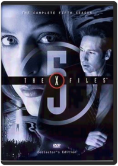 Allen Coulter, Brett Dowler, Chris Carter, Cliff Bole, Daniel SackheimThis collection documents all the truth that was out there during the 1997-8 campaign of the beloved science fiction series, THE X-FILES. Fox Mulder (David Duchovny) and Dana Scully (Gilian Anderson) track suspicious cases that may be attributed to the supernatural or involve interplanetary activity. Memorable moments from this season include Mulder's appearance on Jerry Springer's talk show and Scully working with her partner to fake Mulder's death. Episodes include "Foiie a Deux," "Chinga," "Kill Switch," "Redux," and "Bad Blood," a favorite episode among fans dealing with vampirism.The X-Files: Season 6 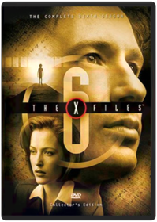 THE UNBELIEVABLE BECOMES UNDENIABLE. Now you can own the entire sixth season of THE X-FILES(tm). All 22 classic episodes are available for the first time in this exclusive 6-disc collector's edition. From "The Beginning," "Dreamland" and "How the Ghosts Stole Christmas" to "Two Fathers," "One Son" and "Biogenesis," these Season Six episodes are a must for every X-Files fan.The X-Files: Season 7 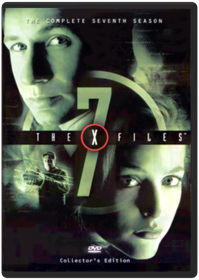 Chris CarterNow you can own the entire seventh season of THE X-FILES™. ALL 22 classic episodes from David Duchovny's last full season as Agent Fox Muler are available for the first time in this exclusive 6-disc collector's edition. From Scully discovering the alien spacecraft in "The Sixth Extinction" and Mulder finally learning the truth about his sister in "Closure," to Mulder's own disappearance and Scully's miraculous pregnancy in "Requiem," these Season Seven episodes are a must for every X-Files fan!The X-Files: Season 8 Barry K. Thomas, Chris Carter, Frank Spotnitz, Kim Manners, Peter MarkleNow you can own the entire eighth season of THE X-FILES™. ALL 21 classic episodes are available for the first time in this exclusive 6-disc collector's edition. From the arrival of Agent John Doggett in "Within" and Mulder's miraculous resurrection in "Deadalive" to the birth od Scully's baby in "Existence," these Season Eight episodes are a must of every X-Files fan!The X-Files: Season 9 David Duchovny, Chris Carter, Cliff Bole, Dwight H. Little, Frank SpotnitzNow you can own the entire ninth season of THE X-FILES™. All 19 classic episodes (including the 2-hour series finale) are available for the first time in this exclusive 7-disc collector’s edition. From the revelation about Scully’s baby in "Nothing Important Happened Today" and the mystery surrounding the murder of Agent Doggett’s son in "Release" to Mulder’s final confrontation with those who would deny "The Truth," these Season Nine episodes are a must for every X-Files fan!The X-Files: Fight the Future / I Want To Believe Genre: Sci-Fi/Fantasy
Rating: PG13
Release Date: 2-DEC-2008
Media Type: Blu-Ray |


 Made with Delicious Library
Made with Delicious Library